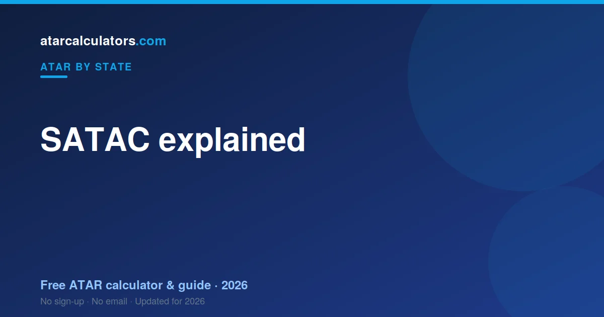
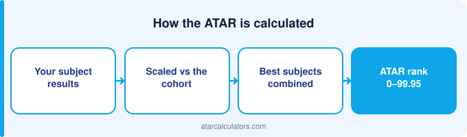

SATAC, the South Australian Tertiary Admissions Centre, scales SACE results, calculates the ATAR and manages university applications for both South Australia and the Northern Territory. The SACE Board sets and assesses the courses and awards the SACE; SATAC then scales those results, adds your best subjects into a university aggregate, and ranks it into an ATAR. Because SA and NT both use SATAC, their ATARs are directly comparable.
Key takeaways
- SATAC is the South Australian Tertiary Admissions Centre.
- It calculates the ATAR for both SA and the NT.
- It scales SACE results and runs university applications.
- The SACE Board sets and marks the courses and awards the SACE.
- Your ATAR comes from a university aggregate of your best scaled subjects.
- SA and NT ATARs are directly comparable, because both use SATAC.

Why SATAC exists
Universities need a fair, consistent way to compare the thousands of students who apply each year, across many different combinations of subjects. A central admissions centre does that job: it scales results, builds a common rank, and manages applications so that students apply once rather than to each institution separately. In South Australia and the Northern Territory, that centre is SATAC.
What SATAC is not
- It is not the body that sets or marks your subjects; that is the SACE Board.
- It is not a university; it processes applications on behalf of universities and TAFE SA.
- It is not limited to South Australia; it serves the Northern Territory too.
SATAC in the national system
SATAC is one of Australia’s tertiary admissions centres, alongside UAC in NSW and the ACT, VTAC in Victoria, QTAC in Queensland, TISC in Western Australia and the University of Tasmania as the Tasmanian centre. These centres work together so that the ATAR means the same thing across the country, and they report national offer figures each year.
What is SATAC?
SATAC stands for the South Australian Tertiary Admissions Centre. It is the organisation that processes tertiary admissions and calculates the ATAR for students in South Australia and the Northern Territory.
In most states there is a central admissions centre that turns senior-school results into a university rank. For SA and the NT, that centre is SATAC. It sits between your SACE results and your university offer.
So when SA or NT students ask who works out their ATAR and where their university offers come from, the answer to both is SATAC.
SATAC’s two roles in detail
SATAC describes itself as the body that calculates the scores and ranks used for tertiary entrance selection, including the university aggregate and the ATAR, and that processes applications for universities and TAFE SA across South Australia and the Northern Territory. Those two roles sit at the heart of every SA and NT student’s journey to university.
- Calculating the ATAR. SATAC scales each Stage 2 SACE or NTCET subject, builds a university aggregate from your best results, and ranks that aggregate into an ATAR. It sends your Tertiary Entrance Statement, showing your aggregate and ATAR, with your Year 12 results.
- Processing applications. SATAC runs the online application system for its member universities and TAFE SA. You list your course preferences, and SATAC makes offers on the institutions’ behalf in rounds.
Who SATAC serves
SATAC processes applications for the universities in South Australia and the Northern Territory and for TAFE SA, and it calculates the aggregate and ATAR for SACE and NTCET students. It also processes selected equity scholarships on behalf of the University of South Australia.
A sense of scale
SATAC handles a large volume of work each year. In the 2024/2025 cycle it responded to more than 39,000 enquiries by phone and email, with January the peak period. In January 2025, the national admissions centres reported that SATAC, covering South Australia and the NT, had made 32,543 offers for Semester 1 2025 courses.
SATAC and TAFE SA
SATAC processes applications for TAFE SA as well as for universities, so you can apply for both through one centre.
One application
You can apply for university and TAFE SA courses through SATAC. Undergraduate applicants list up to six preferences, and TAFE SA applicants up to three.
TAFE SA selection
TAFE SA courses have their own entry requirements, which may include a selection score rather than an ATAR. The flexible option in the SATAC system also contributes to a TAFE SA Selection Score for some courses.
TAFE as a pathway
TAFE SA can be a pathway to university. Completing a TAFE qualification can provide a basis for admission to a degree and sometimes credit towards it. If you are interested in both, ask about pathway arrangements.
Applying
Apply through the SATAC website, list your TAFE SA preferences and follow the same offer-round process. SATAC’s guides explain TAFE SA entry in detail.
For parents and carers
- SATAC is the admissions centre. It scales results, calculates the ATAR and makes offers for SA and NT universities and TAFE SA.
- The SACE Board runs the courses. It sets and assesses subjects and awards the SACE and NTCET.
- The aggregate is out of 90. Your child’s best 90 credits, built from three 20-credit subjects plus a flexible option, form the aggregate behind the ATAR.
- The ATAR is a rank. An ATAR of 80 means your child finished ahead of about 80 per cent of the age group, not that they scored 80 per cent.
- Adjustments affect the selection rank. Bonus points are added to the aggregate for particular courses; the TES does not show the adjusted ATAR.
- There are many pathways. Foundation programs, the STAT, VET and tertiary transfer mean a place is available even if the ATAR is not what your child hoped for.
The best help is practical: encourage steady work, help check course prerequisites, support a sensible preference list and keep perspective.
Adult and non-school-leaver entry
Many university students in South Australia and the Northern Territory are not coming straight from Year 12. SATAC and the universities provide routes for adults and other non-school leavers.
What can be considered
- Previous Year 12 results. An ATAR you received in the past does not expire.
- Previous tertiary study. University or other higher education study is usually assessed on its results.
- VET qualifications. Some qualifications provide a basis for admission.
- Work and life experience. Some courses consider relevant experience.
- The STAT. Many courses accept the STAT for eligible applicants.
- Foundation and enabling programs. Completing one can provide a basis for admission.
Adult entry
Universities publish adult entry routes for applicants who have been out of school for a period. These often consider a combination of experience, previous study and tests such as the STAT.
Applying
Non-school leavers apply through SATAC in the same way as school leavers, listing their preferences. SATAC and the universities can advise on which route suits your background.
What does SATAC do?
SATAC has two main jobs. First, it takes your SACE results, scales them, and calculates your ATAR. Second, it manages the university and TAFE application and offer process for South Australia and the Northern Territory.
On the ATAR side, SATAC scales your Stage 2 subject results, adds your best subjects into a university aggregate, and ranks that aggregate into an ATAR. On the applications side, it collects your preferences and makes offers on behalf of the institutions.
So SATAC is both the calculator of your rank and the gateway to your offers, across two territories.
How the SACE Board and SATAC work together
| Stage | Who handles it | What happens |
|---|---|---|
| Courses and assessment | SACE Board | Sets Stage 1 and Stage 2 subjects, oversees assessment and moderation |
| Certificate | SACE Board | Awards the SACE in SA and the NTCET in the NT |
| Results | SACE Board | Issues subject grades and results |
| Scaling | SATAC | Scales Stage 2 Tertiary Admissions Subjects and Recognised Studies |
| Aggregate and ATAR | SATAC | Builds the university aggregate and converts it to an ATAR |
| Applications and offers | SATAC | Processes preferences and makes offers for universities and TAFE SA |
Based on information published by the SACE Board and SATAC.
A rule of thumb
If your question is about a subject, a grade, an exam or the SACE itself, it is a SACE Board question. If it is about scaling, your aggregate, your ATAR, an application or an offer, it is a SATAC question. Your results come from the SACE Board; your rank and your offers come from SATAC.
Adjustment factors and the ATAR
SATAC’s member universities offer adjustment factors, sometimes called bonus points, which are added to your university aggregate to boost your rank for particular courses.
How they work
Adjustments are made to your university aggregate, which boosts your ATAR for selection purposes. Importantly, your Tertiary Entrance Statement does not show your adjusted ATAR; you contact the relevant university or SATAC for that information.
Kinds of adjustment
Universities set their own schemes, which can include adjustments for particular subjects, for location or circumstances, and for other criteria. Because each university’s scheme differs, the adjustments available to you can vary by institution and course.
Selection ranks
Your selection rank for a course is your ATAR plus any adjustments you are eligible for at that institution. Course cut-offs are usually expressed as selection ranks, so compare your likely selection rank, not just your ATAR, with a course’s requirements.
Where to check
SATAC publishes adjustment factor information, and each university explains its own schemes. Our guides to ATAR bonus points and the selection rank calculator can help.
What the SACE Board does
The SACE Board of South Australia is responsible for the senior secondary certificate and its assessment. Its work produces the results that SATAC scales.
Setting subjects
The SACE Board sets the Stage 1 and Stage 2 subjects that make up the SACE and NTCET, including the Tertiary Admissions Subjects approved for tertiary entrance.
Overseeing assessment
Stage 2 subjects combine school assessment, worth 70 per cent, with external assessment, worth 30 per cent. The SACE Board moderates school assessment so that grading is consistent with each subject’s performance standards across schools.
Awarding the certificate
The SACE Board awards the SACE in South Australia and the NTCET in the Northern Territory. To complete the SACE, students meet requirements including the Personal Learning Plan, literacy and numeracy, the Research Project and a set number of Stage 2 credits at the required grades.
Issuing results
The SACE Board issues subject grades and results, which students can access through SACE Students Online. SATAC uses these results to calculate scaled scores, aggregates and ATARs.
Working with SATAC
The SACE Board and SATAC work together each year, with the SACE Board providing results and SATAC calculating and reporting the aggregate and ATAR. The two bodies also publish complementary information about tertiary entrance.
Common misunderstandings about SATAC
“The SACE Board gives me my ATAR”
The SACE Board sets and assesses your subjects and awards the certificate. SATAC scales your results, calculates your aggregate and ATAR, and makes offers.
“My aggregate is my ATAR”
Your aggregate is a score out of 90. Your ATAR is a rank out of 99.95, derived by ranking your aggregate against other students. They are different numbers.
“All my subjects count equally”
Your aggregate uses your best 90 credits, built from three 20-credit subjects plus a flexible option. A weaker subject outside your best results may count for little or nothing.
“My TES shows my adjusted ATAR”
Your Tertiary Entrance Statement shows your ATAR but not any adjustments. Contact the university or SATAC for your adjusted selection rank.
“A SA ATAR is worth less interstate”
The ATAR is national. A SA or NT ATAR is used at the same value across Australia.
“If I miss the ATAR I need, I cannot go to university”
Many undergraduate courses offer pathways other than the ATAR, including foundation programs, the STAT, VET and tertiary transfer.
How SATAC compares with other admissions centres
| Feature | SATAC (SA and NT) | Most other states |
|---|---|---|
| Region | South Australia and the Northern Territory | One state or territory each |
| Certificate | SACE and NTCET | HSC, VCE, QCE, WACE, TCE |
| Aggregate | University aggregate out of 90.00 | Different aggregates, such as a NSW aggregate out of 500 |
| Structure | Three 20-credit subjects plus a 30-credit flexible option | Varies by state |
| Preferences | Up to six undergraduate, three TAFE SA | Five to eight, depending on the centre |
| The ATAR | National rank, 0 to 99.95 | National rank, 0 to 99.95 |
Despite these differences, the ATAR is the same national measure, so a SA or NT ATAR is accepted across Australia and an interstate ATAR is accepted by SATAC.
Precluded combinations and counting restrictions
Two sets of SATAC rules shape which results can count: precluded combinations and counting restrictions.
Precluded combinations
Some pairs of subjects are so closely related that SATAC does not allow both to count in full towards your aggregate. These are precluded combinations. If you take two such subjects, only one may count fully, or they may be treated in a particular way under the rules.
Counting restrictions
Counting restrictions limit how certain subjects or kinds of study contribute to your aggregate. For example, Recognised Studies are limited to 20 credits, and some subjects may have specific rules about how they can be counted.
Why these rules exist
The rules keep the aggregate fair, so that students cannot gain an advantage by taking several very similar subjects, and so that the aggregate reflects a genuine breadth of study.
How to check
SATAC publishes its precluded-combination and counting rules in its Tertiary Entrance booklet. If you take several related subjects, check the rules or ask your school or SATAC how your combination will be treated.
Why it matters when choosing subjects
Knowing the rules in advance helps you avoid a situation where two subjects you worked hard in cannot both count. It is worth checking before you finalise your Stage 2 choices.
SATAC vs the SACE Board
Students often confuse SATAC with the SACE Board, but they do different things. The SACE Board of South Australia sets the SACE subjects, oversees the assessments, and awards the SACE certificate.
SATAC comes after. It takes the results the SACE Board produces, scales them, and turns them into an ATAR, then handles applications. In short: the SACE Board runs the courses and assessments; SATAC turns the results into an ATAR and an offer.
So the two bodies are a relay. The SACE Board hands over your assessed results, and SATAC converts them into the rank universities use. They are separate organisations with separate roles.
The SACE and the NTCET
South Australian students complete the South Australian Certificate of Education (SACE). Northern Territory students complete the Northern Territory Certificate of Education and Training (NTCET), which uses the SACE framework. Because the two certificates share the same structure and are overseen by the SACE Board, it is efficient for one admissions centre to calculate the ATAR and process applications for both.
Consistency across the two territories
Because SA and NT students study the same curriculum and are scaled and ranked by SATAC through the same process, an ATAR from South Australia and an ATAR from the Northern Territory are produced identically. Neither is harder to earn than the other, and both sit on the same national scale.
What this means for students
If you move between South Australia and the Northern Territory during senior school, your SACE or NTCET study carries over within the same system. And wherever you complete it, your ATAR is calculated by SATAC and accepted across Australia.
Your Tertiary Entrance Statement explained
The Tertiary Entrance Statement (TES) is the document SATAC issues to eligible students. Understanding it helps you see exactly how your ATAR was built.
What it shows
The TES shows your university aggregate and ATAR, calculated using scaled scores. It lists all Stage 2 SACE subjects that can contribute to a university aggregate, with their credit values and scaled scores, and shows any approved Recognised Studies under a separate heading.
How to read the aggregate calculation
The TES sets out the calculation in two parts: the first 60 credits from three 20-credit Tertiary Admissions Subjects, and the flexible option of the best 30 credits. It shows the subtotal for each part and the total aggregate out of 90.
What it does not show
Your TES shows your ATAR but not any adjustment factors. If you are eligible for adjustments, your adjusted selection rank is not on the statement; you contact the university or SATAC for that.
Where to find it
SATAC sends the TES with your Year 12 results, and students can also check their TES and ATAR via SACE Students Online.
Completing the SACE or NTCET
Qualifying for the SACE or NTCET is a requirement for an ATAR, so it is worth understanding what completion involves.
The requirements
To complete the SACE, students complete a set number of credits of subjects and meet grade requirements in the compulsory elements: the Personal Learning Plan, literacy, numeracy and the Research Project, along with a set number of Stage 2 credits at the required grades. The NTCET uses the same framework.
Stage 1 and Stage 2
The SACE is usually completed over two years. Stage 1, generally in Year 11, includes compulsory elements such as the Personal Learning Plan. Stage 2, generally in Year 12, includes the subjects and the Research Project that contribute to the ATAR.
Why completion matters for the ATAR
You must qualify for the SACE or NTCET to receive a university aggregate and ATAR. Completing the certificate, and the right pattern of Tertiary Admissions Subjects, is therefore the foundation of ATAR eligibility.
Where to check the rules
The SACE Board publishes the full completion requirements, and SATAC publishes the tertiary entrance rules. Check both, or ask your school, when planning your subjects.
Why SA and NT share SATAC
The Northern Territory does not run its own separate senior certificate or admissions centre. NT students study the SACE, the same certificate as South Australia, so it makes sense for the same body to handle both.
Because both territories use the SACE and SATAC, their students are scaled and ranked the same way. This is why a SA ATAR and an NT ATAR are produced by an identical process.
So sharing SATAC is not unusual; it reflects that SA and the NT share the same curriculum. One system serves both, which keeps their results consistent.
What scaling does in South Australia
The SACE Board describes scaling as the mathematical process that provides a fair basis for comparing results across different subjects. SATAC applies it to all Stage 2 SACE subjects that can contribute to a university aggregate, and to any approved Recognised Studies.
Why only scaled scores count
Only the scaled scores from Tertiary Admissions Subjects and Recognised Studies can be used in the calculation of a university aggregate. Your raw grades are converted into scaled scores first, so that a result in one subject can be compared fairly with a result in another.
How a scaled score looks
Each 20-credit Stage 2 subject produces a scaled score out of 20, and each 10-credit subject, such as the Research Project, a scaled score out of 10. On your Tertiary Entrance Statement, SATAC lists each subject with its credit value and scaled score. A student’s statement might show, for example, Biology (20 credits) at 17.10 and a 10-credit Research Project at 9.50.
What scaling means for you
- The same grade in two subjects can produce different scaled scores.
- Scaling does not change your position within a subject.
- Scaling is recalculated each year, so past patterns are a guide, not a guarantee.
- Even a scaled score of 0.0 can be used in the aggregate.
Our guides to the best scaling subjects in SA and SACE scaling explain more.
Scaling in South Australia, in more depth
What scaling compares
Scaling compares how students in each subject perform across all their subjects. If a subject’s students tend to be strong across the board, the subject’s results are placed relatively high on the common scale; if the cohort is broad, they are placed lower. The aim is that a scaled score represents a similar level of achievement whichever subject it comes from.
Why scaling is needed
Without scaling, students could gain or lose simply by their choice of subjects. Scaling removes that incentive, so you can choose Stage 2 subjects based on your interests and strengths rather than trying to game the system.
Scaling varies along the range
Scaling is applied along the whole range of results in a subject, so its effect can differ at the top, middle and bottom. That is why it is better to look at scaling near your own likely result than at a single headline figure.
Why SATAC does not publish per-subject scaled scores in advance
SATAC assigns scaled scores each year based on that year’s students, and it advises against choosing subjects on the basis of historical scaling. Your own scaled scores appear on your Tertiary Entrance Statement after results. This is one reason ATAR estimates for SA and the NT are approximate.
What scaling means for your choices
Choose Stage 2 subjects you are good at and interested in. A strong result in a subject you enjoy usually contributes more to your aggregate than a weak result in a subject chosen only for its scaling.
Why your ATAR differs from your grades
Students are often surprised that their ATAR does not match their raw grades. Three features of the SATAC system explain the difference.
Scaling
Your raw grades are converted into scaled scores that place results from different subjects on a common scale. A high grade in one subject can produce a different scaled score from the same grade in another.
The best-90-credits rule
Your aggregate uses only your best 90 credits under SATAC’s rules, so not every result counts, and the mix of full and half contributions in the flexible option shapes your total.
The conversion to a rank
Your aggregate is ranked against other students to produce your ATAR. Because the ATAR is a position in the group, it depends on how everyone performed, not just on your own scores.
What this means
Read your ATAR as a rank, not a mark. Your Tertiary Entrance Statement shows your scaled scores and aggregate, which explain how your results combined into your ATAR.
Glossary of SATAC terms
ATAR
Australian Tertiary Admission Rank, a national rank from 0 to 99.95 derived from your university aggregate.
Counting restrictions
SATAC rules that limit how certain subjects or combinations contribute to your aggregate.
Flexible option
The final 30 credits of your aggregate, the best 30 credits from a combination of eligible results.
NTCET
The Northern Territory Certificate of Education and Training, which uses the SACE framework.
Precluded combination
A pair of closely related subjects that cannot both count in full towards your aggregate.
Recognised Studies
Studies other than standard Tertiary Admissions Subjects, such as VET or university subjects, that can contribute up to 20 credits to your flexible option.
SACE
The South Australian Certificate of Education.
SACE Board
The body that sets and assesses SACE and NTCET subjects and awards the certificates.
Scaled score
A subject result after scaling, out of 20 for a 20-credit subject or out of 10 for a 10-credit subject.
Selection rank
Your ATAR plus any adjustment factors for a particular course.
Tertiary Admissions Subject (TAS)
A SACE Stage 2 subject approved as suitable preparation for tertiary study, whose scaled score can count towards your aggregate.
Tertiary Entrance Statement (TES)
The document SATAC issues showing your university aggregate, ATAR and scaled scores.
University aggregate
A score out of 90.00 calculated from your best 90 credits of scaled study, which is converted to an ATAR.
How SATAC scales your results
SATAC scales each Stage 2 subject so that a score in one subject is comparable to a score in another. Scaling reflects how strong the students taking a subject are across all their subjects, not how hard the subject feels.
A subject scales up when its students are strong across the board, and down when the cohort is broad. This keeps the ATAR fair, so your rank does not depend on which subjects you happened to choose. See how scaling works.
The result is a scaled score for each of your subjects. Those scaled scores, not your raw marks, are what SATAC uses to build your aggregate and ATAR.
How the 90-credit aggregate is built
SATAC explains that you need 90 credits of study to calculate a university aggregate, and that the aggregate is the best possible outcome from your eligible results. It is built in two parts.
The first 60 credits
The first 60 credits are the scaled scores from three 20-credit Tertiary Admissions Subjects. Normally 10-credit subjects do not count towards the first 60 credits, but some 10-credit subjects, when studied in valid pairs, can substitute for a 20-credit subject.
The flexible option: the final 30 credits
The flexible option is the best 30 credits of scaled scores from a combination of:
- the scaled score of a 20-credit Tertiary Admissions Subject;
- half the scaled score of one or more 20-credit Tertiary Admissions Subjects;
- 10-credit Tertiary Admissions Subjects, such as the Research Project; and
- approved Recognised Studies, up to a maximum of 20 credits.
The best possible outcome
SATAC calculates your aggregate as the best possible outcome from these options, within its counting restrictions and precluded-combination rules. That means you are not penalised for taking more than the minimum; SATAC uses the combination that gives you the highest aggregate.
Three 20-credit subjects for the first 60 credits, plus the best 30 credits from your remaining results for the flexible option, give a university aggregate out of 90.00, which is converted to an ATAR.
VET and Recognised Studies
One distinctive feature of the SATAC system is the flexible option, which can include study beyond standard Stage 2 subjects.
What Recognised Studies are
Recognised Studies are studies other than standard Tertiary Admissions Subjects that SATAC can include in your flexible option, up to a maximum of 20 credits. They include completed VET qualifications and some university subjects.
How VET is scaled
SATAC assigns scaled score equivalents to Recognised Studies to keep the ATAR calculation fair. For a completed VET qualification, the scaled score is based on the average of the first 70 credits of Tertiary Admissions Subjects used in the calculation of your university aggregate. A Certificate III or higher can contribute towards entry.
University subjects in the flexible option
Some students include university subjects in their flexible option. These are not pre-approved and must be submitted to SATAC for approval. SATAC generally approves degree-level subjects on application, provided they are not introductory subjects, and assigns them scaled score equivalents.
The 20-credit limit
Recognised Studies can contribute a maximum of 20 credits to your aggregate, all within the 30-credit flexible option. More than one type of Recognised Studies can be used, within that limit.
If you are completing VET or university study alongside your SACE, check with SATAC how it can count towards your flexible option, and whether it needs to be submitted for approval.
Choosing Stage 2 subjects with the ATAR in mind
Take enough Tertiary Admissions Subjects
Your aggregate needs at least 60 credits from 20-credit Tertiary Admissions Subjects, so plan to take at least three, and usually four or five, full TAS at Stage 2. Taking more than the minimum gives SATAC more results to choose your best from.
Choose subjects you can do well in
Because your aggregate uses your best scaled results, the subjects in which you are likely to achieve your highest grades usually contribute most. Interest and strength matter more than scaling.
Remember the Research Project
The compulsory 10-credit Research Project can contribute through the flexible option, so treat it seriously.
Check prerequisites
Some university courses require particular Stage 2 subjects. Check the requirements for courses you are interested in before finalising your Stage 2 choices.
Watch precluded combinations
Some closely related subjects cannot both count in full. Check SATAC’s precluded-combination and counting rules if you take several related subjects.
Consider Recognised Studies
If you are completing VET or university study, check whether it can count as Recognised Studies in your flexible option, within the 20-credit limit.
More worked university aggregates
Seeing a few more examples helps show how the flexible option works. These are illustrative, with invented scaled scores.
Example 1: five 20-credit subjects plus the Research Project
Ava completes five 20-credit Tertiary Admissions Subjects and the 10-credit Research Project. Her three strongest 20-credit subjects form the first 60 credits. For the flexible option, SATAC takes the best 30 credits from her two remaining 20-credit subjects (or half-contributions of them) and her Research Project, choosing the combination that gives the highest total. Because she has more than the minimum, SATAC has several combinations to choose from.
Example 2: four 20-credit subjects plus the Research Project
Ben completes four 20-credit subjects and the Research Project. His three best 20-credit subjects form the first 60 credits. His flexible option draws on his fourth 20-credit subject and his Research Project, up to 30 credits. This is a common pattern.
Example 3: including a VET qualification
Chloe completes three 20-credit subjects, the Research Project and a Certificate III. Her three 20-credit subjects form the first 60 credits. Her flexible option includes her Research Project and her VET qualification as Recognised Studies, scaled using the average of the first 70 credits of her Tertiary Admissions Subjects, up to the 20-credit Recognised Studies limit.
Example 4: using half-contributions
Daniel has several strong 20-credit subjects. For his flexible option, SATAC may use half the scaled score of one or more 20-credit subjects to make up the best 30 credits. This flexibility is why the option is called “flexible”.
What the examples show
In every case, SATAC builds the aggregate from the combination that gives the highest total, within its rules. Taking a full, varied program gives you more combinations and protects you if one result is lower than expected.
The university aggregate
Once your subjects are scaled, SATAC combines your best scaled results into a university aggregate. The aggregate is drawn from 90 credits of your strongest Stage 2 study: three 20-credit Tertiary Admissions Subjects for the first 60 credits, plus a flexible option of the best 30 credits from your remaining results, so your best subjects carry your result.
Your compulsory Research Project can contribute to this aggregate, alongside your Tertiary Admission Subjects. Because only your best results count, attempting a broad program does not penalise you; SATAC uses the combination that works most in your favour.
So the aggregate captures your strongest scaled subjects. The higher your aggregate, the higher your ATAR, since the ATAR is your aggregate expressed as a rank.
How the aggregate becomes a rank
SATAC reports your university aggregate on a scale of 0 to 90.00, in intervals of 0.1. It then ranks every student’s aggregate and derives a percentile rank, comparing your position with other students who achieved a similar aggregate or higher. That percentile position is expressed as your ATAR, on the national scale from 0 to 99.95.
What an ATAR of 80 means
An ATAR of 80 means you finished ahead of about 80 per cent of the relevant age group. Because the ATAR is a rank, it can differ from your aggregate and from your raw subject grades. Two students with the same aggregate receive the same ATAR, but the same aggregate can map to a slightly different ATAR in different years, because the ranking depends on that year’s students.
The conversion table
SATAC publishes a SACE and NTCET university aggregate to ATAR conversion table each year, showing how aggregates related to ATARs for that year. Because it is published after results, calculators use past tables to estimate your ATAR.
Your Tertiary Entrance Statement
SATAC sends eligible students a Tertiary Entrance Statement showing their university aggregate and ATAR, along with the scaled scores used. It is the document that records your tertiary entrance results.
ATAR eligibility in SA and the NT
Not every SACE or NTCET student receives an ATAR. To obtain a university aggregate and an ATAR, you must meet SATAC’s requirements.
The requirements
To obtain a university aggregate and ATAR, you must qualify for the SACE or NTCET, comply with the rules on precluded combinations and counting restrictions, and complete at least 90 credits of study at Stage 2, of which at least 60 credits must be from 20-credit Tertiary Admissions Subjects. A maximum of 20 credits can be Recognised Studies. The subjects used can come from a maximum of three attempts, which need not be in consecutive years.
What a Tertiary Admissions Subject is
SATAC describes Tertiary Admissions Subjects as SACE Stage 2 subjects approved by SATAC’s member institutions as suitable preparation for tertiary study. You must complete a minimum number of TAS credits to be eligible for an ATAR.
The Research Project
The Research Project is a compulsory 10-credit Stage 2 subject for the SACE. Its scaled score can contribute to your aggregate through the flexible option, alongside your Tertiary Admissions Subjects.
If you are not eligible
Students who do not receive an ATAR can still reach university. SATAC reminds students who may not have received the ATAR they hoped for that many undergraduate courses offer admission pathways other than the ATAR.
A worked university aggregate
SATAC’s own Tertiary Entrance Statements show how an aggregate is built. The illustration below follows the same structure, with figures drawn from a published example statement.
| Subject | Credits | Scaled score |
|---|---|---|
| Biology | 20 | 17.10 |
| Chemistry | 20 | 17.30 |
| Geography | 20 | 15.90 |
| Mathematical Methods | 20 | 15.70 |
| Research Project B | 10 | 9.50 |
Figures from a published SATAC example Tertiary Entrance Statement.
In this example, the first 60 credits come from the three strongest 20-credit subjects: Chemistry (17.30), Biology (17.10) and Geography (15.90), giving a subtotal of 50.30. The flexible option, the best 30 credits, draws on Mathematical Methods and the Research Project, giving a subtotal of 25.20. The two parts add to a university aggregate of 75.50 out of 90, which is then converted to an ATAR using that year’s table.
Notice that the aggregate uses the combination that produces the best outcome, and that the 10-credit Research Project contributes through the flexible option. This is why taking a full program does not disadvantage you.
From aggregate to ATAR, in more detail
Ranking the aggregates
Once every eligible student’s aggregate is calculated, SATAC ranks the aggregates and works out each student’s percentile position. SATAC describes this as deriving a percentile rank based on your aggregate and comparing your rank with other students who achieved a similar aggregate or higher.
Relating it to the age group
The ATAR reflects your position relative to your age group, not just among students who received an ATAR. That is why the typical ATAR among recipients sits above 50: students who receive an ATAR tend to be stronger academically than the whole age group.
The conversion table
SATAC publishes a SACE and NTCET university aggregate to ATAR conversion table each year. It shows, for that year, which aggregates corresponded to which ATARs. For example, a published example shows how an aggregate of 65.6 out of 90 converts to an ATAR. Because the table is published after results, calculators use past tables to estimate your ATAR.
Why the same aggregate can give different ATARs
Because the conversion depends on the current year’s students, the same aggregate can correspond to a slightly different ATAR in different years. In a large cohort the differences are usually small, but they are one reason no one can know an exact ATAR before results.
What this means for you
Read your ATAR as a rank. To understand how it was built, look at your scaled scores and aggregate on your Tertiary Entrance Statement, and use the year’s conversion table to see how your aggregate mapped to your ATAR.
From aggregate to ATAR
The final step is turning your aggregate into an ATAR. SATAC ranks every student’s aggregate and expresses your position as an ATAR, a number up to 99.95 that shows the percentage of students you finished above.
So an ATAR of 80 means you finished ahead of about 80 percent of the relevant age group. The ATAR is a rank, not a mark, which is why it can differ from your raw scores.
This national rank is what universities across Australia use, so a SA or NT ATAR is directly comparable to an ATAR from any other state.
Applying to SATAC from interstate or applying interstate from SA
Applying to SA or NT from another state
If you completed Year 12 in another state and want to study in South Australia or the Northern Territory, you apply through SATAC. Your interstate ATAR is recognised at its full value, and SATAC assesses it against each course’s requirements. Offers are made in SATAC’s rounds as your results become available.
Applying interstate from SA or the NT
If you completed the SACE or NTCET and want to study interstate, you apply through that state’s admissions centre: UAC for NSW and the ACT, VTAC for Victoria, QTAC for Queensland, TISC for Western Australia, or the University of Tasmania. Your SA or NT ATAR is used at its full value, and each centre has its own preference limits and deadlines.
Timing
When you apply across state borders, your ATAR needs to reach the other admissions centre before it can be used in an offer round. Check each centre’s timing, because release and offer dates differ between states.
Adjustments interstate
Each state’s universities have their own adjustment schemes. Check whether you are eligible as an interstate applicant, because some adjustments depend on where you live or study.
Our guides to UAC, VTAC, QTAC, TISC and UTAS explain each centre.
SATAC in the national ATAR system
A shared scale
Every admissions centre produces ATARs on the same 0 to 99.95 scale, representing a student’s position in their state’s age group. Although each state calculates its aggregate differently, the final rank means the same thing everywhere.
Cooperation between centres
The admissions centres work together, publish combined information and report national offer figures. They describe the ATAR as a key enabler of student mobility, noting that a Victorian ATAR of 90.00, for example, can be used at the same value in Queensland or Western Australia. SATAC takes part in this national system.
National offer figures
In January 2025, the centres reported 271,097 offers for Semester 1 2025 courses, including 32,543 by SATAC. In January 2026, they reported 265,046 undergraduate offers for Semester 1 2026. These figures show the scale of the national system SATAC is part of.
What this means for SA and NT students
Whether you plan to stay in South Australia or the Northern Territory or study elsewhere, your ATAR is a national currency. Build it through strong results in your best Tertiary Admissions Subjects, and it will serve you wherever you apply.
Are SA and NT ATARs the same?
Yes. Because SA and NT students both study the SACE and are ranked by SATAC through the same process, a SA ATAR and an NT ATAR mean exactly the same thing. Neither is easier or harder to earn than the other.
And since the ATAR is national, both are also directly comparable to ATARs from every other state. An 85 from the NT, an 85 from SA, and an 85 from anywhere else all represent the same rank.
How to apply through SATAC
SATAC runs an online application system. You apply at the SATAC website, list your course preferences, and SATAC matches you to the highest preference you are eligible for in each round.
How many preferences you can list
Undergraduate applicants can list up to six preferences in an application, and TAFE SA applicants can list up to three. SATAC advises listing courses in the order you want them, because it assumes your first preference is the course you most want.
How offers work
SATAC makes offers in rounds, generally emailing them to the address you used to register your mySATAC account. Domestic students receive an offer for their highest eligible preference, may receive more than one offer across rounds, and respond directly to the institutions.
Change of preference
You can change your preferences up to each round’s deadline. SATAC sets a change-of-preference deadline before its main offer rounds, so it is worth reviewing your list once you have your ATAR.
Key application points
- One application covers most SA and NT universities and TAFE SA.
- List your genuine first choice first.
- Watch for change-of-preference and offer-round deadlines.
- Check your email and mySATAC account around offer rounds.
Our guide to how the SA ATAR is calculated explains the rank behind your offers.
How SATAC offer rounds work
SATAC makes offers in a series of rounds from December through to March. Understanding the rhythm helps you plan.
Early rounds
From mid-December to early January, SATAC runs several offer rounds as results become available from the SACE Board and from interstate. Some applicants, such as those with qualifications already available, receive offers early.
The main round
The main offer round including Year 12 results is held in January. In 2025 it was on 10 January, for the 2026 intake it was 15 January 2026, and for the 2027 intake it is 14 January 2027. This is the round most Year 12 applicants watch for.
Later rounds
SATAC continues making offers through January, February and March. A second January round and regular rounds follow the main round, so students who miss out early still have chances.
How offers are sent
Offers are emailed to the address you used to register your mySATAC account, generally by a set time on the round date. Check your email and mySATAC account around each round.
Responding to offers
Domestic students respond directly to the institutions whose offers they accept. You may receive more than one offer across rounds, so read each one and respond by its deadline.
Note the change-of-preference deadline before the main round. Reviewing your preferences once you have your ATAR is one of the most useful things you can do.
Building a strong SATAC preference list
Because SATAC matches you to the highest preference you are eligible for, how you order your six undergraduate preferences matters.
Order by what you want
List your courses in the order you genuinely want them, with your first choice at the top. SATAC assumes your first preference is the course you most want, and you are offered the highest preference you qualify for in each round.
Cover your range
Include an aspirational course near or above the top of your likely selection rank, several realistic courses within it, and at least one safe course below it. That way, wherever your ATAR lands, you have an option you are happy with.
Use all your preferences
Undergraduate applicants can list up to six preferences. Use them to cover your range rather than listing several near-identical courses at the same level.
Check every requirement
For each course, check prerequisites, any additional requirements and the selection rank. An offer depends on meeting every requirement, not just the rank.
Review after results
Once you have your ATAR, review your preferences before the change-of-preference deadline. Adjust your list if your result is higher or lower than expected.
Put your genuine first choice first, even if it is a stretch. You will be offered the highest preference you are eligible for, so a realistic order with aspirational, realistic and safe options works best.
Applications and offers
Beyond calculating your ATAR, SATAC runs the application process for universities and TAFEs in South Australia and the Northern Territory. You list your course preferences through SATAC, and it makes offers on behalf of the institutions in rounds.
You rank your preferences in order, and SATAC matches you to the highest preference you qualify for. So it is worth ordering your choices carefully, with your genuine first choice at the top and realistic options below.
So SATAC is your single point of contact for applying to most SA and NT institutions, rather than applying to each one separately.
How interstate applicants are treated
SATAC also processes applications from students who did not study the SACE or NTCET, including interstate and international applicants. An ATAR earned in another state is recognised, because the ATAR is national: a Victorian ATAR of 90.00, for example, is used at the same value in South Australia.
What interstate applicants do
If you completed Year 12 in another state and want to study in SA or the NT, you apply through SATAC, which assesses your ATAR or qualification against each course’s requirements. Offers are made in the same rounds as for local students, as your results become available.
Timing for interstate applicants
SATAC makes several offer rounds as results become available from the SACE Board and from interstate. If you are applying from another state, your ATAR needs to reach SATAC before it can be used in a round, so check the timing.
University pathways in South Australia in detail
South Australia’s universities are known for offering many ways into a degree beyond the ATAR. Understanding them helps you plan, especially if your ATAR may fall short of a course’s cut-off.
Foundation and enabling programs
Foundation studies programmes and enabling courses, such as those run by the University of Adelaide College and UniSA College, build academic skills and can provide a basis for admission to a degree. They are designed for students who need preparation before degree study.
The Special Tertiary Admissions Test
Some courses accept the STAT for eligible applicants as a basis for admission. It assesses skills such as reasoning and comprehension, and can provide an entry route for students without a competitive ATAR.
VET pathways
A completed VET qualification, such as a Certificate III or higher, can contribute to entry or provide a separate basis for admission. TAFE SA qualifications can also lead into related degrees with credit.
Guaranteed entry and conditional offers
Some universities guarantee entry at set selection ranks, or make conditional offers, so that students who meet the rank and other requirements are assured of a place. These give a clearer, earlier sense of your chances.
Tertiary transfer
Students can move into a course based on university study, sometimes through a higher education quota, rather than on their ATAR. This is a common route for students who start in a related course.
Why pathways matter
SATAC reminds students that many undergraduate courses offer admission pathways other than the ATAR. In recent years, a large share of university starters in South Australia have entered through non-ATAR routes. A student who does not receive the ATAR they hoped for still has strong options.
Interstate and other students
SATAC also handles applications from students who did not study the SACE, including interstate and international applicants. An ATAR earned in another state is recognised, since the ATAR is national.
If you studied elsewhere and want to apply to a SA or NT institution, SATAC is still the body you go through. Your existing ATAR or qualification is assessed for entry, and offers are made the same way.
Pathways to university without an ATAR
A large share of university entry in South Australia is through routes other than the ATAR. SATAC and its member universities offer many pathways.
Common pathways
- Foundation and bridging programs, such as foundation studies programmes and university colleges, which prepare students for degree study.
- The Special Tertiary Admissions Test (STAT), which some courses accept for eligible applicants.
- VET qualifications, such as a Certificate III or higher, which can contribute to entry or provide a separate basis for admission.
- Guaranteed entry and conditional offers, where some universities guarantee entry at set ranks or make conditional offers.
- Tertiary transfer, where students move into a course based on university study, sometimes through a higher education quota.
Why pathways matter
SATAC reminds students that many undergraduate courses offer admission pathways other than the ATAR. South Australia’s universities publish these pathways, so a student who does not receive the ATAR they hoped for still has options.
Getting advice
If you do not receive an offer, SATAC and the universities encourage you to contact them to discuss your options. Our guides to university entry explain the main pathways.
Results day in South Australia and the NT
Before results day
- Make sure your SATAC application and preferences are complete.
- Note the release date and the change-of-preference deadline.
- Check any adjustment schemes you may be eligible for.
On results day
- Check your SACE or NTCET results through SACE Students Online.
- Read your Tertiary Entrance Statement, which shows your aggregate, ATAR and scaled scores.
- Compare your ATAR, and your likely selection rank, with the courses you want.
In the days after
- Review your preferences before the change-of-preference deadline.
- Watch for offer rounds from January.
- If a result looks wrong, check the SACE Board’s processes.
Looking after yourself
Results day can be emotional. Remember that SATAC’s universities offer many pathways, and that your ATAR is one step in a longer journey. If you feel overwhelmed, talk to someone you trust.
After you receive an offer
Read your offer
Your offer sets out the course, campus, start date and any conditions. Make sure you understand what you need to do and by when.
Respond to the institution
Domestic students respond directly to the institution whose offer they accept. Respond before the deadline, and note that you may receive more than one offer across rounds.
Consider later rounds
If you are holding out for a higher preference, remember that SATAC continues making offers through January, February and March. You may receive a higher preference in a later round.
Enrol
Once you accept, follow the institution’s enrolment steps and prepare for orientation and the start of your course.
If you change your mind
You can change your preferences for later rounds, and once at university, internal transfers based on university results are common. Contact the institution about your options.
Precluded combinations in South Australia
SATAC treats certain pairs of subjects as overlapping so heavily that it will not count both at full value toward your aggregate. These are called precluded combinations. The idea is that two subjects covering much the same material should not both earn credit as if they were separate achievements. If you take a precluded pair, SATAC counts one of them and sets the other aside, or counts it only as Recognised Studies, depending on the rule for that pair.
Precluded combinations most often involve closely related mathematics or language subjects, or a subject and its background-speakers or continuers variant. The practical risk is that a student plans a load expecting five countable subjects, only to find two of them are a precluded pair, leaving effectively four. Before you lock in your Stage 2 subjects, check the current precluded-combinations list so your load gives SATAC the full set of countable results you expect.
| Situation | What SATAC does |
|---|---|
| Two subjects on the precluded list | Counts one, sets the other aside or counts it as Recognised Studies |
| Language continuers and background speakers in the same language | Treated as overlapping; check the current rule |
| Closely related mathematics subjects | May be precluded; confirm before enrolling |
| Unrelated subjects | Both count normally toward the aggregate |
The precluded-combinations list is published by SATAC and can change between years. Always check the current list.
How the counting rules fit together
Put the rules in order and the aggregate becomes easy to picture. First, SATAC identifies your Tertiary Admissions Subjects and takes your best three 20-credit results for the first 60 credits. Then it builds the flexible final 30 credits from your best remaining results, which can include a fourth and part of a fifth subject, the Research Project, and a capped amount of Recognised Studies. Precluded combinations are applied so overlapping subjects do not both count at full value. The result is a 90-credit aggregate drawn from your strongest eligible study.
Because the aggregate rewards your best results rather than every result equally, a single weaker subject rarely sinks a strong overall profile, provided you have enough countable study for SATAC to set it aside. That is why planning for a little more than 90 credits of Tertiary Admissions Subjects gives you a safety margin.
A short guide for parents and carers
If you are supporting a student through Year 12 in South Australia or the Northern Territory, a few points make the system easier to follow. SATAC is the agency that turns Stage 2 results into an ATAR and handles university and TAFE SA applications; the SACE Board is the body that runs the certificate and reports the subject results. The two work together, but the ATAR and the application process are SATAC’s part of the picture.
The most useful thing to understand is that the ATAR is a rank, not a mark. It reports where a student sits relative to their age group, not a percentage of questions answered correctly. A student can work hard, earn solid subject results, and still receive an ATAR that looks lower than those marks because of how ranking and scaling work. That is normal and is not a sign of failure.
It also helps to know that the ATAR is one route among many. If a student’s ATAR falls short of a course, foundation programs, the STAT, VET qualifications and tertiary transfer can still lead to the same degree. Encouraging a student to list a realistic spread of preferences, and to know the pathways exist, takes pressure off results day.
Where to turn. SATAC’s customer enquiries team can answer questions about applications, offers and the ATAR, and the school’s careers adviser can help with subject choices and pathways. You do not have to work it out alone.
A rough timeline through Year 12
Through the year, students study their Stage 2 subjects and complete their school assessment and examinations. Applications through SATAC open well before results, so students register their preferences while they are still finishing the year. After the SACE Board releases results, SATAC calculates the aggregate and the ATAR, and the first round of offers follows. Later rounds continue into the new year for students who are holding out for a higher preference or applying late.
Exact dates shift from year to year, so the safest habit is to check SATAC’s published key dates rather than relying on last year’s calendar. Missing an application or offer-response deadline is one of the few avoidable setbacks in the whole process.
When SATAC releases results
SATAC releases ATARs in mid-to-late December, shortly after SACE results are available, with the exact date confirmed closer to the time. University offers follow in rounds, with the main round in January.
So results day and offers are separate moments: your ATAR in December, then your offer in the new year. See the SA ATAR release date guide for what to expect on the day.
SATAC results and offer dates
SATAC releases results and offers on a timetable each year. Exact dates are confirmed closer to the time.
| When | What happens |
|---|---|
| Mid-December | SACE and NTCET results, Tertiary Entrance Statements and ATARs released |
| Late December to early January | Change-of-preference deadline; early offer rounds as results become available |
| Mid-January | Main offer round including Year 12 results |
| Late January onwards | Further offer rounds through January, February and March |
Based on SATAC’s published offer timetables. Confirm current dates on the SATAC website.
Recent dates
In 2025, SACE and NTCET results and ATARs were released on Monday 15 December, and the first offer round including Year 12 results was held on 10 January 2025. For the 2026 intake, the first round with results was 15 January 2026, and for the 2027 intake it is Thursday 14 January 2027. Our SA release date guide has the latest details.
How many students receive an ATAR
SATAC reported that, of the 19,317 students completing their SACE or NTCET across South Australia, the Northern Territory and SACE International locations in 2025, 13,469 also received a Tertiary Entrance Statement and ATAR. In South Australia alone, SACE data recorded 13,010 students receiving an ATAR in 2025, up from 12,278 in 2024.
Estimating your SA or NT ATAR step by step
An estimate is a planning tool, not a promise. Here is how to build a sensible one.
Step 1: List your Stage 2 subjects
Write down your Stage 2 Tertiary Admissions Subjects, with their credit values, and the Research Project. Note any VET or university study you plan to use as Recognised Studies.
Step 2: Estimate your grades
For completed subjects, use your actual grades. For subjects in progress, use realistic expectations based on your school assessments and teacher feedback.
Step 3: Apply scaling
Each grade is scaled into a scaled score. Because SATAC does not publish per-subject scaling in advance, a calculator built for SA applies recent scaling to estimate your scaled scores.
Step 4: Build the 90-credit aggregate
Take your best three 20-credit subjects for the first 60 credits, then the best 30 credits for the flexible option, including the Research Project and any Recognised Studies.
Step 5: Convert to an estimated ATAR
Your aggregate is compared with a recent conversion table to estimate your ATAR. Because the comparison depends on each year’s students, treat the result as a range.
Step 6: Run scenarios
Run cautious, realistic and optimistic versions of your remaining results, and re-run your estimate as results come in. Our SACE ATAR calculator can help.
Because SATAC does not publish per-subject scaled scores in advance, calculators approximate the scaling step. Treat SA and NT estimates as ranges, and re-run them as your results come in.
A checklist for SA and NT Year 12 students
- I am on track to qualify for the SACE or NTCET.
- I am taking at least three, and ideally four or five, 20-credit Tertiary Admissions Subjects.
- I know the Research Project can contribute through the flexible option.
- I have checked the prerequisites for the courses I want.
- I have checked SATAC’s precluded-combination and counting rules for my subjects.
- I have considered any VET or university study as Recognised Studies.
- I have estimated my ATAR using a SA calculator, treating it as a range.
- I know which adjustment schemes I may be eligible for.
- My SATAC preference list covers my range, in the order I want.
- I know the results date, change-of-preference deadline and offer rounds.
Using your estimate to plan
An estimate helps you compare your likely ATAR with the courses you want.
Compare with selection ranks
For each course, add any adjustments you are likely to receive to your estimated ATAR range, and compare the result with the course’s most recent selection rank. Courses whose ranks sit below your cautious estimate are likely to be safe; those within your range are realistic; those above it are aspirational.
Find your levers
Use a calculator to see which subjects move your estimate most at your current level, while keeping every subject strong. Those are often the best places to focus extra effort.
Re-run as results come in
An estimate becomes more reliable as more of your results are known. Re-run it after each major assessment, and treat it as a range rather than a single figure.
Plan your preferences around the range
Build your SATAC preference list so that it has good options across your whole range, with your genuine first choice first.
Our guide to how accurate ATAR calculators are explains what an estimate can and cannot tell you.
What a credit means in the SACE
SACE subjects are measured in credits rather than in “units” or “subjects”, and the number of credits tells you how much a subject counts. A full-year Stage 2 subject is worth 20 credits; a semester-length subject is worth 10 credits. To complete the SACE you need 200 credits in total across Stage 1 and Stage 2, and you must meet the literacy, numeracy, Personal Learning Plan and Research Project requirements along the way. When SATAC builds your university aggregate, it works in credits too, which is why the aggregate is described as being drawn from 90 credits rather than from a fixed number of subjects.
Thinking in credits helps when you plan a load. Four 20-credit Tertiary Admissions Subjects plus a 10-credit subject give you 90 credits of Stage 2 study, which is the amount SATAC draws on for the university aggregate. Carrying a fifth full subject gives SATAC more to choose from, because the flexible 30-credit portion of the aggregate is taken from your best remaining results after the first three 20-credit subjects are counted.
Plan in credits. If you aim for at least 90 credits of Stage 2 Tertiary Admissions Subjects, with a little more in reserve, SATAC has a full aggregate to build and some room to pick your strongest results.
Tertiary Admissions Subjects and the rest
Not every Stage 2 subject counts the same way toward the aggregate. SATAC distinguishes Tertiary Admissions Subjects (often shortened to TAS) from other recognised study. The first 60 credits of your aggregate must come from three 20-credit Tertiary Admissions Subjects. The flexible final 30 credits can include a fourth and part of a fifth Tertiary Admissions Subject, your Research Project, and a capped amount of Recognised Studies, including some VET and some interstate or international study, scaled onto the SACE scale.
Because the first 60 credits are locked to Tertiary Admissions Subjects, it pays to make sure at least three of your strongest full-year subjects are Tertiary Admissions Subjects. A student who loads up on subjects that are recognised but not classified as Tertiary Admissions Subjects can find that those results only ever reach the flexible 30-credit portion, and only if they are among the best remaining results.
How the Research Project fits the aggregate
The Research Project is a compulsory part of the SACE, and students sometimes assume it cannot help their ATAR. In South Australia the Research Project can contribute to the university aggregate through the flexible 30-credit portion, provided it is among your best remaining results after the first three 20-credit Tertiary Admissions Subjects are counted. A 10-credit Research Project that scales well can lift an aggregate where a weaker fourth subject would not.
This is one reason not to treat the Research Project as a box to tick. A strong result there is a result that can count, and because it is compulsory, every student has it available. Students who put genuine effort into the Research Project give SATAC one more strong result to draw on when it builds the flexible portion of the aggregate.
Recognised Studies, VET and the cap
Recognised Studies covers learning that sits outside the standard Stage 2 subjects but is still recognised for the SACE, including some vocational education and training and some interstate or overseas study. A capped amount of Recognised Studies, commonly up to 20 credits, can count toward the flexible portion of the aggregate, scaled onto the SACE scale so it can be compared fairly with ordinary subjects.
The cap matters. Because only a limited amount of Recognised Studies can count, a student cannot build an entire aggregate out of VET credits. The system is designed so that the core of the aggregate is Tertiary Admissions Subjects, with Recognised Studies adding to, rather than replacing, that core. If you are combining a VET qualification with your SACE and hoping it lifts your ATAR, check in advance how much of it can count and how it will be scaled.
Check before you count on it. How a specific VET qualification is recognised and scaled can change. Confirm the current treatment with SATAC rather than assuming a certificate will count toward your aggregate.
A worked example: a balanced load
Imagine a student who takes five Stage 2 Tertiary Admissions Subjects plus the Research Project. SATAC takes the best three 20-credit subjects for the first 60 credits of the aggregate. For the flexible final 30 credits it looks at the remaining results: the fourth subject, part of the fifth, and the Research Project, and it counts the best of those up to 30 credits, after scaling. A weaker fifth subject that would have dragged the total down is simply not among the best remaining results, so it sits outside the aggregate.
The lesson is that a broad, balanced load protects a student. With more than 90 credits of countable study, SATAC can build the aggregate from the strongest results and quietly leave a weak one aside, rather than being forced to count it because there is nothing better to use.
A worked example: relying on scaling
Now imagine two students with similar raw results, one in subjects that historically scale up and one in subjects that historically scale down. After SATAC applies scaling, the first student’s aggregate can sit higher, because strong results in competitively studied subjects are worth more on the common scale. This is not a trick; it is the scaling step doing its job of making results from different subjects comparable.
The temptation is to chase “high-scaling” subjects regardless of ability. That usually backfires, because scaling rewards a strong result, and a strong result is easier to earn in a subject that suits you. The better strategy is to choose subjects you can do well in, keep an eye on how they tend to scale, and aim for genuine strength rather than gaming the scale.
Scaling is not published in advance. SATAC does not release each subject’s scaling before results, so any estimate of how a subject will scale is informed guesswork. Treat a calculator’s figure as a guide, not a guarantee.
A plain-language glossary
The South Australian and Northern Territory system uses a handful of terms that are worth knowing. Keeping them straight makes every other explanation easier to follow.
| Term | What it means |
|---|---|
| SATAC | The South Australian Tertiary Admissions Centre, which calculates the ATAR and handles applications for SA and NT. |
| SACE | The South Australian Certificate of Education, the Year 11 and 12 qualification. The NTCET is its Northern Territory equivalent. |
| SACE Board | The body that runs the certificate and reports subject results. |
| Stage 2 | The final year of the SACE, whose results feed the university aggregate. |
| Tertiary Admissions Subject | A Stage 2 subject that counts toward the university aggregate in the standard way. |
| Aggregate | A score out of a set maximum, built from 90 credits of your scaled Stage 2 results, which SATAC converts to an ATAR. |
| Scaling | Adjusting results so achievement in different subjects can be compared fairly. |
| ATAR | The Australian Tertiary Admission Rank, a rank between 0 and 99.95 reported in steps of 0.05. |
| Selection rank | Your ATAR plus any adjustment factors, which is what a course actually compares against its cut-off. |
| Adjustment factors | Extra points added to the ATAR for eligible circumstances or subjects, producing the selection rank. |
| Precluded combination | A pair of overlapping subjects that SATAC will not both count at full value. |
| Recognised Studies | Learning outside standard Stage 2 subjects that can count, within a cap, toward the flexible part of the aggregate. |
A checklist before results day
A short checklist keeps the process under control. Before results, make sure your SATAC application is lodged with a realistic spread of preferences, your first choice listed first. Check that at least three of your strongest subjects are Tertiary Admissions Subjects, and that you have no surprise precluded combinations. Note the key dates for results, first-round offers and offer responses. Know which pathways apply to your preferred courses in case your ATAR falls short. With those in place, results day is about reading an outcome, not scrambling to react to one.
Common mistakes to avoid
A few errors come up every year, and all of them are avoidable. The first is treating an estimate as a result. A calculator gives a range built on assumptions about scaling that SATAC has not published, so a student who banks on a single number can be caught out when the official ATAR differs. Read an estimate as a band, and plan preferences across that band.
The second is listing too few preferences. A student who lists only a dream course, with nothing below it, has no safety net if the cut-off rises or their ATAR lands lower than hoped. Listing a spread, first choice first, costs nothing and protects you, because SATAC always makes the best offer it can from your ordered list.
The third is missing a prerequisite. A high ATAR does not rescue an application to a course that requires a specific subject you did not take. Check prerequisites early, while you can still choose the subjects that satisfy them, rather than discovering the gap after results.
The fourth is ignoring the pathways. Students who fixate on the ATAR as the only door sometimes give up when it falls short, not realising that foundation programs, the STAT, VET and tertiary transfer lead to the same degrees. Knowing the pathways exist changes how a disappointing ATAR feels.
The deadline mistake. Missing a SATAC application or offer-response deadline is the one error that can cost a place outright. Note the key dates early and set your own reminders ahead of them.
How an SA ATAR calculator helps
An SA-specific ATAR calculator is useful precisely because it builds in the aggregate rules: best three 20-credit Tertiary Admissions Subjects for the first 60 credits, then the best remaining results up to 30 more, with scaling applied to put subjects on a common footing. A generic calculator that ignores the 90-credit structure or the SATAC scaling will give a figure that looks precise but rests on the wrong model.
Use a calculator to test choices, not to lock in a number. Try different subject combinations and different levels of results, and watch how your estimate moves. That tells you which subjects carry your estimate and where extra effort would help most. The estimate’s absolute value matters less than what it reveals about your choices.
SATAC compared with other admissions centres
Every state and territory has a tertiary admissions centre, and they work in much the same way: collect applications, apply the aggregate and scaling rules for their system, calculate the ATAR, and run offer rounds. SATAC covers South Australia and the Northern Territory. Victoria has VTAC, New South Wales and the ACT have UAC, Queensland has QTAC, Western Australia has TISC, and Tasmania’s university admits largely through its own processes.
The ATAR itself is national, so a rank calculated by SATAC means the same as the same rank from any other centre. What differs is the machinery behind it: the certificate, the subjects, the exact aggregate rules and the scaling. That is why an SA student uses SATAC’s rules and an interstate student uses their own centre’s, even though both end up on the one ATAR scale.
| Centre | Covers |
|---|---|
| SATAC | South Australia and the Northern Territory |
| VTAC | Victoria |
| UAC | New South Wales and the ACT |
| QTAC | Queensland |
| TISC | Western Australia |
All centres produce the same national ATAR scale from their own state’s results and rules.
Applying across state borders
If you want to study interstate, you generally apply through the admissions centre for the state where the university sits, using your SATAC-calculated ATAR as your rank. Many students apply through SATAC for SA or NT courses and through another centre for courses elsewhere, running two separate applications. Each centre has its own fees, deadlines and preference limits, so treat them as independent processes and check both calendars.
Because the ATAR is nationally comparable, you do not need a different rank for each state; the same ATAR travels with you. What you do need is to meet each course’s own prerequisites and any state-specific requirements, which can differ even for similar degrees.
The STAT in detail
The Special Tertiary Admissions Test, usually called the STAT, is a test of general reasoning and comprehension rather than of specific subject knowledge. It gives applicants who do not have a competitive ATAR, or no ATAR at all, a way to demonstrate the kind of thinking university study demands. Many South Australian courses accept a STAT result as a basis for admission or as a supplement to other credentials, which makes it a central part of the pathway landscape.
Because the STAT measures skills rather than content, you cannot cram facts for it the way you might for a subject exam, but you can prepare. Practising the question types, working on timed reading and reasoning, and sitting sample tests all help you perform closer to your real ability on the day. The test rewards clear, careful thinking under time pressure.
The STAT is especially useful for mature applicants, for students whose ATAR fell short of a course, and for anyone returning to study after time away. It is worth checking early whether your preferred course accepts the STAT, and how it weighs the result, so you can decide whether sitting it is worthwhile for your situation.
Check acceptance first. Not every course uses the STAT, and those that do may weigh it differently. Confirm with SATAC and the university before you register to sit it.
Foundation and enabling programs in depth
Foundation studies and enabling programs are structured courses that build the academic skills a degree requires and, on successful completion, provide a basis for admission. In South Australia, providers such as the University of Adelaide College and UniSA College run programs of this kind, each leading toward degrees at the associated university. They suit students who want a supported, structured route rather than a single test.
These programs do more than tick an entry box. They teach academic writing, study skills and subject foundations, so students who come through them often arrive at their degree better prepared than they would have been straight from a borderline ATAR. For a student who struggled in Year 12 but is capable of university work, an enabling program can be a stronger start than squeezing into a course on a bare rank.
Entry requirements, length and the degrees they lead into vary by program, so the sensible first step is to contact the university offering your preferred course and ask which foundation or enabling program feeds into it and what that program requires.
TAFE SA as a route to a degree
TAFE SA sits alongside the universities in the SATAC process, and for many students it is a route into a degree rather than a dead end. A completed TAFE SA qualification, such as a diploma, can provide a basis for admission to a related degree and sometimes credit that shortens the degree. Through SATAC you can list TAFE SA preferences alongside university ones, so you do not have to choose one world or the other at application time.
This matters for students whose ATAR falls short of a direct university offer. Starting at TAFE SA, performing well, and then transferring into a degree with credit is a well-worn path, and the university judges the transfer on your TAFE SA results rather than on your Year 12 ATAR. For some students that is a more forgiving and better-prepared route than direct entry.
List both. Because SATAC lets you list university and TAFE SA preferences together, you can keep a direct-entry hope and a TAFE SA pathway alive in the one application.
Tertiary transfer in practice
Tertiary transfer lets a student move into a course on the basis of university study already completed, rather than on their ATAR. A student who enrols in a related course, does well in the first year or semester, and then applies to transfer is assessed on that university performance. For courses where the ATAR cut-off is the main barrier, this turns a high-stakes Year 12 result into one input among several.
Universities often set aside a portion of places for transfer applicants or admit them through a quota, so the route is a planned part of the system rather than an exception. If your ATAR falls short of your target course but you can get into a related one, performing strongly there and transferring is a realistic plan worth discussing with the university early.
The key is to choose a starting course that genuinely connects to your target, so that your study and any credit carry across. A careers adviser or the university’s admissions staff can help you map a starting course to the degree you ultimately want.
Common myths about the SA system
Several beliefs circulate about the South Australian system that are worth correcting. The first is that the ATAR is a mark out of 100. It is not; it is a rank. An ATAR of 85 means you are ranked near the top 15% of your age group, not that you earned 85%. Mistaking the rank for a percentage leads students to misread both their own result and a course’s cut-off.
The second myth is that you should pick subjects purely for their scaling. Scaling rewards a strong result, and strong results are easier to earn in subjects that suit you, so chasing a high-scaling subject you dislike usually lowers rather than raises your aggregate. Choose for genuine strength, then keep scaling in mind at the margins.
The third myth is that the ATAR is the only way into university. In South Australia, as elsewhere, a large share of students enter through pathways: foundation programs, the STAT, VET and tertiary transfer. Treating the ATAR as the single door creates needless pressure and hides the routes that help when a rank falls short.
The fourth myth is that a weaker subject automatically drags down your ATAR. Because SATAC builds the aggregate from your best 90 credits, a weak result can be set aside if you have enough stronger study to replace it. The system is designed to reward your strengths, not to punish a single slip.
Rank, not mark. If you remember one thing about the ATAR, make it this: it reports where you sit relative to your age group, which is why it can look different from your subject marks.
Putting it all together
SATAC’s job is to turn your Stage 2 results into a fair, nationally comparable rank and to run the shared application and offer process for South Australia and the Northern Territory. It scales your results so subjects can be compared, builds a 90-credit aggregate from your strongest study, converts that into your ATAR, adds any adjustment factors to form your selection rank, and matches your ranked preferences to course cut-offs. Understanding each step turns a confusing process into a sequence you can plan for.
The practical takeaways are simple. Choose subjects you can do well in, keep at least three strong Tertiary Admissions Subjects, watch for precluded combinations, and give SATAC a little more than 90 credits to work with. Lodge your SATAC application on time with a realistic spread of preferences, first choice first. Check prerequisites and key dates early. And remember the pathways, so a disappointing ATAR is a detour rather than a dead end.
Choosing Stage 2 subjects strategically
Good subject selection balances three things: what you are strong in, what your target courses require, and how subjects tend to scale. Strength comes first, because scaling rewards a strong result and because you will sustain effort more easily in subjects you can do well in. Prerequisites come next, since a missing one can rule you out regardless of rank. Scaling is a tie-breaker at the margins, not the starting point.
A sensible plan is to lock in the subjects your target courses require, add the subjects you are genuinely strongest in, and then, among roughly equal options, lean toward those that tend to scale a little better. Keep enough Tertiary Admissions Subjects that at least three strong 20-credit results anchor your aggregate, and carry a little extra so SATAC can set a weak result aside. Avoid precluded combinations that quietly cost you a countable subject.
Review the plan with your careers adviser, who can flag prerequisite gaps and precluded pairs you might miss. Subject choice is the single decision over which you have the most control, and getting it right in Year 11 shapes everything SATAC can do with your results in Year 12.
Strength first, scaling last. Choose subjects you can do well in and that meet your prerequisites; use scaling only to choose between options you would be roughly equally strong in.
What to do on results day
When results and your ATAR are released, read them calmly before reacting. Compare your ATAR, plus any adjustment factors that give your selection rank, against the recent cut-offs for your preferences. If your top preference is within reach, you are well placed for a first-round offer. If it is not, this is the moment to use the preference changes SATAC allows, swapping estimates for choices based on your real rank.
If your ATAR falls short of every preference, do not treat results day as the end. Note which later rounds apply, adjust your preferences to realistic and guaranteed-entry options, and look up the pathways into your target course: foundation programs, the STAT, VET and tertiary transfer. A plan made calmly on results day beats a scramble, and the pathways mean a lower-than-hoped ATAR rarely closes a door for good.
How to read an SA ATAR estimate well
An estimate is only as good as the assumptions behind it, and the biggest assumption in any South Australian estimate is scaling. Because SATAC does not publish each subject’s scaling before results, every calculator infers it from past patterns. That means two things. First, the estimate is a range, not a point: a sensible calculator might tell you your ATAR is likely to land within a band of a few points either side. Second, the estimate is most trustworthy when your entered results are realistic, so feeding in hopeful marks produces a hopeful, unreliable figure.
The right way to use an estimate is to run it several times. Enter conservative results for a floor, likely results for a middle, and strong-but-plausible results for a ceiling. The band between the floor and the ceiling is what you plan around. If your target course sits inside that band, it is a realistic reach; if it sits well above the ceiling, you should lean on pathways and safety preferences; if it sits below the floor, you can list it with confidence and look higher as well.
Running the estimate this way also shows you the shape of your result, not just its size. You will see which subjects pull the estimate up and which hold it back, and whether a change in one subject moves the whole figure much or little. That insight is more useful than the headline number, because it tells you where effort pays off in the months before results.
Plan around the band. Treat your estimate as a floor-to-ceiling range and build your preference list across it, rather than betting everything on a single predicted number.
Where extra effort moves your ATAR most
Not every hour of study moves your ATAR equally. Because the aggregate is built from your best 90 credits and because scaling rewards strong results, effort pays off most in two places: lifting a subject from good to strong, where scaling turns the improvement into more aggregate, and shoring up the subjects that are currently among your best 90 credits, since those are the ones that actually count. Pouring time into a sixth subject that will not make your best results, or into a subject you have already maxed out, moves the figure far less.
A calculator helps you find these leverage points. Raise one subject’s result slightly and watch the estimate; if it barely moves, that subject is probably not among your counted credits or is already strong. If it jumps, that subject is both counted and scaling-sensitive, which makes it a good target for the next block of study. Repeating this across your subjects turns a vague “study harder” into a specific plan.
None of this replaces broad competence, since you cannot know for certain in advance exactly which results will count. But at the margins, when you are deciding where a limited number of study hours should go, aiming them at counted, scaling-sensitive subjects is how you get the most ATAR for your effort.
Keeping the ATAR in proportion
For all the detail, it helps to end where the system itself points: the ATAR is one rank, from one year, used mainly to allocate university places. It is central to admission, and worth planning for carefully, but it is not a verdict on your ability or a ceiling on your future. South Australia’s pathways exist precisely because a single rank cannot capture everyone’s potential, and they carry large numbers of students into the same degrees each year by routes other than a high Year 12 result.
So plan well, use a good estimate, choose subjects wisely, lodge a sensible preference list on time, and then let the process run. If your ATAR meets your goals, the path is straightforward. If it does not, the pathways are there, and they lead to the same places. Either way, understanding how SATAC builds your rank turns results day from a mystery into a step you have prepared for.
Estimate your SA ATAR
You do not have to wait for SATAC to get a sense of your ATAR. Our SACE ATAR calculator applies scaling to your Stage 2 scores and estimates your ATAR, so you can plan ahead.
It is a useful way to see how your best scaled subjects come together, and to test how different results would change your rank. For how the calculation works in full, see how ATAR is calculated in SA.
Common questions
Does SA use SATAC?
Yes. SATAC, the South Australian Tertiary Admissions Centre, scales SACE results, calculates the ATAR and manages university applications for South Australia. It also does the same for the Northern Territory.
Is a SA ATAR equivalent to a NT ATAR?
Yes. SA and NT students both study the SACE and are ranked by SATAC through the same process, so their ATARs mean exactly the same thing. Both are also comparable to ATARs from every other state, since the ATAR is national.
Why do SA and NT share SATAC?
Because NT students study the SACE, the same certificate as South Australia. Since both use the same curriculum, the same body scales and ranks their results, which keeps the two territories’ ATARs consistent.
Who sets SA exams?
The SACE Board of South Australia sets the SACE subjects, oversees the assessments and awards the SACE. SATAC comes after, scaling those results into an ATAR and handling applications. They are separate bodies.
What does SATAC stand for?
SATAC stands for the South Australian Tertiary Admissions Centre. It scales SACE and NTCET results, calculates the university aggregate and ATAR, and manages university and TAFE SA applications for South Australia and the Northern Territory.
Does South Australia use SATAC?
Yes. SATAC is South Australia’s tertiary admissions centre. It scales SACE results, calculates the ATAR and manages university and TAFE SA applications for South Australia, and does the same for the Northern Territory.
Does the Northern Territory use SATAC?
Yes. NT students complete the NTCET, which uses the SACE framework, and SATAC calculates their ATAR and processes their applications using the same process as for South Australia.
What are SATAC’s two main jobs?
SATAC calculates the scores and ranks used for tertiary entrance selection, including the university aggregate and ATAR, and it processes applications and makes offers for universities and TAFE SA in South Australia and the Northern Territory.
Who sets SACE exams?
The SACE Board of South Australia sets the SACE subjects, oversees assessment and awards the SACE. SATAC comes afterwards, scaling those results into an ATAR and handling applications. They are separate bodies.
Is SATAC the same as the SACE Board?
No. The SACE Board sets and assesses subjects and awards the SACE and NTCET. SATAC scales the results, calculates the aggregate and ATAR, and runs applications and offers.
Is a SA ATAR the same as an NT ATAR?
Yes. SA and NT students study the same framework and are ranked by SATAC through the same process, so their ATARs mean exactly the same thing. Both are also comparable to ATARs from every other state.
What is a university aggregate?
The university aggregate is a score reported in the range 0 to 90.00, calculated from the scaled results of your performance in Tertiary Admissions Subjects and any approved Recognised Studies. It is the basis for your ATAR.
How many credits are in a university aggregate?
You need 90 credits of study to calculate a university aggregate. The first 60 credits come from three 20-credit Tertiary Admissions Subjects, and the final 30 credits form the flexible option.
What is the flexible option?
The flexible option is the final 30 credits contributing to your university aggregate. It is the best 30 credits from a combination of 20-credit and 10-credit Tertiary Admissions Subjects, half the scaled score of 20-credit subjects, and up to 20 credits of Recognised Studies.
What is a Tertiary Admissions Subject?
A Tertiary Admissions Subject, or TAS, is a SACE Stage 2 subject approved by SATAC’s member institutions as suitable preparation for tertiary study. You must complete a minimum number of TAS credits to be eligible for an ATAR.
Does the Research Project count towards my ATAR?
Yes, it can. The Research Project is a compulsory 10-credit Stage 2 subject, and its scaled score can contribute to your university aggregate through the flexible option, alongside your Tertiary Admissions Subjects.
How is a 20-credit subject scaled?
Each 20-credit Stage 2 Tertiary Admissions Subject produces a scaled score out of 20. SATAC lists each subject with its credit value and scaled score on your Tertiary Entrance Statement.
How is a 10-credit subject scaled?
Each 10-credit subject, such as the Research Project, produces a scaled score out of 10. It can contribute to your aggregate through the flexible option.
Can 10-credit subjects count in the first 60 credits?
Normally no. The first 60 credits come from three 20-credit Tertiary Admissions Subjects. However, some 10-credit subjects, when studied in valid pairs, can substitute for a 20-credit subject.
What is the maximum university aggregate?
The university aggregate is reported on a scale of 0 to 90.00, in intervals of 0.1. It is calculated from your best 90 credits of eligible study.
How is my aggregate turned into an ATAR?
SATAC ranks every student’s aggregate and derives a percentile rank, comparing your position with other students. That position is expressed as your ATAR, on the national scale from 0 to 99.95.
What does an ATAR of 80 mean in SA?
An ATAR of 80 means you finished ahead of about 80 per cent of the relevant age group. Because the ATAR is a rank, it can differ from your aggregate and your raw subject grades.
Can the same aggregate give a different ATAR in different years?
Yes. Two students with the same aggregate in the same year receive the same ATAR, but the same aggregate can map to a slightly different ATAR in different years, because the ranking depends on that year’s students.
What is a Tertiary Entrance Statement?
The Tertiary Entrance Statement, or TES, is the document SATAC issues to eligible students. It shows your university aggregate and ATAR and lists the scaled scores used to calculate them.
Does my TES show my adjusted ATAR?
No. Your Tertiary Entrance Statement shows your ATAR but not any adjustment factors. If you are eligible for adjustments, you contact the relevant university or SATAC for your adjusted selection rank.
Where can I see my ATAR?
SATAC sends your Tertiary Entrance Statement with your Year 12 results, and you can also check your TES and ATAR via SACE Students Online.
What do I need to get an ATAR in SA or the NT?
You must qualify for the SACE or NTCET, comply with the precluded-combination and counting rules, and complete at least 90 credits of Stage 2 study, of which at least 60 credits are from 20-credit Tertiary Admissions Subjects, with at most 20 credits of Recognised Studies, in a maximum of three attempts.
Do my results have to come from one year?
No. The subjects used in your university aggregate can come from a maximum of three attempts, which need not be in consecutive years.
Can a scaled score of 0.0 count?
Yes. SATAC notes that subjects with scaled scores of 0.0 can be used in the calculation of the university aggregate.
What are precluded combinations?
Precluded combinations are pairs of closely related subjects that SATAC’s rules prevent from both counting in full towards your aggregate. SATAC’s counting restrictions and precluded-combination rules are applied when your aggregate is calculated.
Can VET count towards my SA ATAR?
Yes. A completed VET qualification can contribute to your flexible option as Recognised Studies, up to 20 credits. SATAC scales a VET qualification using the average of the first 70 credits of Tertiary Admissions Subjects used in your aggregate.
Can university subjects count towards my ATAR?
Some students include university subjects in their flexible option. These are not pre-approved and must be submitted to SATAC for approval. SATAC generally approves degree-level subjects that are not introductory.
What is the maximum credit for Recognised Studies?
Recognised Studies can contribute a maximum of 20 credits to your university aggregate, all within the 30-credit flexible option. More than one type of Recognised Studies can be used, within that limit.
How does SATAC scale VET qualifications?
SATAC assigns a scaled score to a completed VET qualification based on the average of the first 70 credits of Tertiary Admissions Subjects used in the calculation of your university aggregate.
Does scaling change each year in SA?
Yes. SATAC assigns scaled scores each year based on that year’s students, and it advises against choosing subjects on the basis of historical scaling. Your own scaled scores appear on your TES after results.
Why can’t I see subject scaling in advance?
SATAC does not publish per-subject scaled scores in advance, because they depend on each year’s students. This is one reason ATAR estimates for SA and the NT are approximate.
Should I choose subjects based on scaling?
No. SATAC advises against choosing subjects on the basis of historical scaling. A strong result in a subject you are good at usually contributes more to your aggregate than a weak result in a subject chosen only for its scaling.
How many preferences can I list with SATAC?
Undergraduate applicants can list up to six preferences in a SATAC application, and TAFE SA applicants can list up to three. List your courses in the order you want them.
How does SATAC decide my offer?
SATAC matches you to the highest preference you are eligible for in each round, based on your selection rank and the course’s requirements. You may receive more than one offer across rounds.
Can I change my SATAC preferences?
Yes. You can change your preferences up to each round’s change-of-preference deadline. It is worth reviewing your list once you have your ATAR.
What is a selection rank?
Your selection rank for a course is your ATAR plus any adjustment factors you are eligible for at that institution. Course cut-offs are usually expressed as selection ranks.
Do SA universities offer bonus points?
Yes. SATAC’s member universities offer adjustment factors that are added to your university aggregate to boost your rank for particular courses. Each university sets its own scheme.
Where do I find my adjusted ATAR?
Your Tertiary Entrance Statement does not show your adjusted ATAR. Contact the relevant university or SATAC to find your adjusted selection rank for a course.
Is SATAC a government body?
SATAC is the admissions centre owned by South Australia’s universities to run a shared application and admission process. It works closely with the SACE Board and the universities.
Does SATAC mark my exams?
No. The SACE Board oversees assessment and reports subject results. SATAC uses those results to calculate the ATAR and process applications.
Can SATAC change my subject results?
No. SATAC calculates the ATAR from the results the SACE Board reports. Queries about a subject result go to the SACE Board’s processes, not SATAC.
What does SATAC actually calculate?
SATAC builds your university aggregate from your scaled Stage 2 results and converts it into your ATAR. It then matches your ranked preferences to course selection ranks to make offers.
Is the aggregate public?
Your aggregate and the results used to calculate it appear on your Tertiary Entrance Statement. The methodology is published, but individual aggregates are private to each student.
How many credits build the aggregate?
The aggregate is built from 90 credits of your strongest scaled Stage 2 study: three 20-credit Tertiary Admissions Subjects, plus a flexible best-30-credit portion from your remaining results.
What counts in the flexible 30 credits?
A fourth and part of a fifth Tertiary Admissions Subject, your Research Project, and a capped amount of Recognised Studies including some VET, scaled and counted if they are among your best remaining results.
Why only my best results?
Building the aggregate from your strongest results means a single weaker subject does not sink an otherwise strong profile, provided you have enough countable study for SATAC to set the weak one aside.
Does a fifth subject always help?
A strong fifth subject gives SATAC more to choose from for the flexible portion, which can only help. A weak fifth subject simply will not be among your best remaining results.
Can I rely on VET to fill the aggregate?
No. Only a capped amount of Recognised Studies, including VET, can count. The core of the aggregate must be Tertiary Admissions Subjects, so VET adds to rather than replaces them.
What if I take four subjects only?
Four 20-credit subjects give 80 credits, short of the 90 the aggregate draws on, so you would want a Research Project or other eligible study to fill the flexible portion. Check your plan gives SATAC 90 credits.
Does the Personal Learning Plan count?
The Personal Learning Plan is a Stage 1 SACE requirement, not a Stage 2 Tertiary Admissions Subject, so it is not part of the university aggregate. It still matters for completing the SACE.
Is Stage 1 used in the ATAR?
The aggregate is built from Stage 2 study. Stage 1 counts toward completing the SACE and meeting prerequisites, but the ATAR rests on Stage 2 scaled results.
How does a precluded combination affect me?
If you take a precluded pair, SATAC counts one at full value and sets the other aside or counts it only as Recognised Studies, so you effectively have one fewer countable subject than you might expect.
Where is the precluded-combinations list?
SATAC publishes the current precluded-combinations list each year. Check it before finalising your Stage 2 subjects, because it can change.
Can I appeal my ATAR?
The ATAR follows mechanically from your scaled results. If you believe a subject result is wrong, use the SACE Board’s query or review process for that result; SATAC recalculates from any corrected result.
Does SATAC round my ATAR?
The ATAR is reported in steps of 0.05, so your position maps to the nearest step. SATAC applies the national methodology for this.
Can my ATAR go down after release?
Your ATAR is set from your results at release. It would only change if an underlying subject result changed through the SACE Board’s processes.
Do universities see my preferences?
SATAC runs the matching, and institutions see the applications relevant to their offers. Your full ordered preference list is used by SATAC to make you the best possible offer.
Can a course see I ranked it low?
SATAC makes offers based on your ranked list and the courses’ selection ranks. Ranking a course lower does not disadvantage you if it is the best offer SATAC can make you.
What if two of my preferences would both make an offer?
SATAC makes you an offer for the highest preference you qualify for, not both. That is why order matters: your top qualifying preference is the one you receive.
Do I have to accept my first offer?
No. You can decline, or accept and still wait for a higher preference in a later round in most cases. Read the offer’s conditions.
How do later rounds change my chances?
Later rounds fill remaining places and can bring a higher preference if a spot opens. Keeping your preferences updated lets you benefit from later rounds.
Does SATAC charge for each round?
The application fee covers the process; you do not pay again for each offer round. Check the current fee structure on SATAC’s site.
Can I apply after Year 12 has ended?
Yes. Late and non-school-leaver applications are possible, though they can miss the first round and cost more. SATAC’s deadlines set the cut-offs.
What is Recognised Studies in one line?
Learning outside standard Stage 2 subjects, such as some VET or interstate study, that can count within a cap toward the flexible part of your aggregate, scaled onto the SACE scale.
What is a Tertiary Admissions Subject in one line?
A Stage 2 subject that counts toward the university aggregate in the standard way, as opposed to study that counts only as Recognised Studies.
What is the aggregate in one line?
A score out of a set maximum, built from 90 credits of your strongest scaled Stage 2 study, which SATAC converts into your ATAR.
What is the selection rank in one line?
Your ATAR plus any adjustment factors, which is the figure a course actually compares against its cut-off.
Where do I confirm all of this?
On SATAC’s website and in its current tertiary entrance booklet, which set out the aggregate rules, scaling, adjustment factors, key dates and course information for the current year.
Do I need to study in SA to use SATAC?
SATAC calculates ATARs for SACE and NTCET students and assesses interstate and some overseas qualifications. You use SATAC to apply to SA and NT institutions, wherever you studied.
Can I apply to SA universities from interstate?
Yes. You apply through SATAC, using your ATAR from your home state, which is nationally comparable. Check what documentation SATAC needs from an interstate applicant.
Does the ATAR mean the same from every state?
Yes. The ATAR is a national rank, so the same value means the same standing in the age group regardless of which centre calculated it.
Why do centres calculate it differently then?
Each centre applies its own state’s certificate, subjects, aggregate rules and scaling, but all map onto the one national ATAR scale, so the end result is comparable even though the method differs.
Can I move my SATAC application to another state?
No. You lodge a separate application with the other state’s centre. Your ATAR travels with you, but the applications are independent.
What if I studied the IB?
SATAC can convert an International Baccalaureate result into an ATAR for SA and NT applications. Check the current conversion and what SATAC needs from you.
Does an IB score map neatly to an ATAR?
SATAC uses a published conversion from the IB score to an ATAR, so an IB student receives a comparable rank. The conversion is set each year; check the current table.
Can homeschooled students get an ATAR?
Students need the eligible Stage 2 study SATAC uses to build an aggregate, which usually means enrolment in SACE subjects. A homeschooled student should check with the SACE Board and SATAC about eligibility.
Is there an age limit for an ATAR?
No. Mature students can receive or use an ATAR, and can also be assessed on other bases such as the STAT, previous study and work experience.
How do adjustment factors help regional students?
Many schemes add points for rural or remote location, lifting the selection rank. This recognises the extra barriers regional students can face. Check each university’s scheme and whether you must apply.
Do I lose adjustment factors if I move?
Eligibility depends on the scheme’s criteria at the relevant time. If your circumstances change, check how the scheme treats that, because the rules are set by each university.
Can adjustment factors get me above 99.95?
No. Adjustments lift your selection rank, not your ATAR, and the selection rank is capped by each scheme. The ATAR itself tops out at 99.95.
Are adjustment factors the same at every SA university?
No. Each university sets its own schemes and caps, so the adjustments available for a course at one university can differ from another. Compare schemes when you choose preferences.
What evidence do adjustment schemes need?
Some adjustments apply automatically from information SATAC holds; others need documentation of the circumstance by a deadline. Check each scheme’s evidence requirements early.
Can I combine several adjustment factors?
Schemes often allow several categories to combine, up to the overall cap. The exact combination rules are set by each university; check how they stack.
Do adjustment factors apply to TAFE SA?
Adjustment schemes are generally tied to university courses. TAFE SA entry works differently, so check the entry requirements for the specific TAFE SA course.
Is a selection rank higher than 99.95 possible?
A selection rank can exceed the bare ATAR through adjustments, but it is still capped by the scheme and cannot push you past the practical ceiling the university sets. The ATAR scale itself ends at 99.95.
What is a guaranteed ATAR for a course?
Some courses publish a guaranteed-entry selection rank: meet it and other requirements, and a place is assured while offers last. It gives certainty that a demand-driven cut-off cannot.
Should I include a guaranteed-entry course in my list?
Including one as a lower preference is a sensible safety net, so that even if higher preferences miss, you have an assured option. SATAC will still offer your highest qualifying preference.
Do prerequisites override my ATAR?
Yes. A course can require specific subjects regardless of rank, so a high ATAR does not substitute for a missing prerequisite. Check prerequisites while you can still choose subjects to meet them.
Can I meet a prerequisite with a bridging course?
Often yes. Bridging and enabling subjects can satisfy some prerequisites after Year 12. Confirm with the university that a bridging option meets the specific prerequisite.
What is assumed knowledge versus a prerequisite?
A prerequisite must be met; assumed knowledge is background the course expects but does not strictly require. Lacking assumed knowledge is allowed but can make a course harder; lacking a prerequisite can rule you out.
Does every course have prerequisites?
No. Many courses have none and rank applicants on selection rank alone. Others, especially in science, engineering and health, have specific subject prerequisites. Check each course.
How do I plan subjects to meet prerequisites?
Work backward from your target courses: list their prerequisites, then choose Stage 1 and Stage 2 subjects that satisfy them. Doing this early avoids discovering a gap after results.
Can I apply with incomplete prerequisites?
You can apply, but you may need to complete the prerequisite before you can enrol, through a bridging option or later study. Ask the university how it handles this.
Does SATAC check my prerequisites?
SATAC publishes prerequisites and the universities apply them in selection. It is your responsibility to make sure you meet them, so check early rather than assuming.
What if my preferred course is very competitive?
List it first anyway, add realistic options below it, and consider pathways such as transfer or a related course if the cut-off is beyond your likely rank. You lose nothing by ranking it first.
Can I reapply next year if I miss out?
Yes. You can apply again in a later cycle, often with improved credentials such as a STAT result, bridging study or a pathway program. An ATAR does not expire, so it can still count.
Does missing out this year hurt next year?
No. A fresh application is assessed on its merits. Many students enter university a year or more after Year 12 through pathways, and it does not disadvantage their later study.
Where can I get tailored advice?
SATAC’s enquiries team, the universities’ admissions staff and your school’s careers adviser can give advice for your specific situation, which is more reliable than general rules of thumb.
Is SATAC only for school leavers?
No. SATAC handles applications from school leavers, mature-age applicants, interstate and international students, and people returning to study. Many applicants are not current Year 12 students.
Can I apply to SATAC while still in Year 11?
You apply in the year you finish Year 12, for study the following year. In Year 11 the useful work is choosing subjects that meet your target courses’ prerequisites.
What is the first thing to do in Year 12?
Check the prerequisites and likely selection ranks of the courses you want, make sure your subjects meet the prerequisites, and note SATAC’s application deadlines. Early planning avoids late surprises.
How do I estimate my ATAR during the year?
Use an SA-specific calculator with realistic results for each subject, remembering it applies the 90-credit aggregate and estimates scaling. Treat the result as a range, not a fixed number.
Why does my calculator estimate differ from my ATAR?
A calculator estimates scaling, which SATAC does not publish in advance, and you may have entered results that differ from your finals. Differences are normal; the official ATAR is the one that counts.
Can a calculator tell me my exact scaling?
No. No calculator knows the current year’s scaling before SATAC applies it. A good calculator uses past patterns to estimate, which is useful as a guide but not exact.
Which subjects move my estimate most?
Usually your stronger, well-scaling subjects among your best 90 credits. A calculator lets you test this by changing one subject at a time and watching the estimate move.
Should I drop a subject I am weak in?
Not necessarily. If you have more than 90 credits of countable study, a weak subject may simply be set aside. Dropping it only helps if it frees time for subjects that will count.
Does taking six subjects help?
It gives SATAC more to choose from for the flexible portion, which can only help, but only if you can keep the extra subject strong. A weak sixth subject will not be among your best results.
How important is the Research Project?
It is compulsory and can count toward the aggregate through the flexible portion if it is among your best remaining results. A strong Research Project is a result that can genuinely help, so treat it seriously.
Can I use results from a previous year?
SATAC can draw on eligible Stage 2 study, and an ATAR does not expire. How earlier study combines with later study depends on the aggregate rules; seek advice for your situation.
What if I repeat Year 12?
Repeating can change the results SATAC draws on. Whether it raises your ATAR depends on your new results and how the aggregate is built. Discuss it with your school and SATAC first.
Does a gap year affect my ATAR?
No. Your ATAR stays valid through a gap year. You can apply the following year using the same ATAR, and you may also have new credentials such as a STAT result.
How do I compare two courses’ cut-offs?
Look at each course’s most recent selection rank and remember they can shift with demand. Use them as a guide, place your preferences across your likely range, and rank by what you want most.
Is a higher cut-off a better course?
Not necessarily. A high cut-off reflects demand and limited places, not quality. Choose a course for its fit with your goals, not just its rank.
Can I trust last year’s cut-off?
Use it as a guide, not a promise. Selection ranks move year to year with demand and places, so build a spread of preferences rather than banking on a single figure.
What is the safest way to list preferences?
List your most-wanted course first, then realistic options across your likely ATAR range, and include a safer or guaranteed-entry option low on the list. SATAC offers your highest qualifying preference.
Will listing a safety option cost me my top choice?
No. SATAC makes you the best offer it can from your ordered list, so a safety option lower down never displaces a higher preference you qualify for.
Can I update preferences after I see my ATAR?
Yes, up to the deadline before an offer round. This is exactly when to adjust, replacing estimates with choices based on your real ATAR.
What happens between results and offers?
The SACE Board releases subject results, SATAC releases the ATAR, and then first-round offers follow. The gap is short; check SATAC’s key dates for the exact sequence.
How will I be told about an offer?
Through your SATAC account and the channels SATAC specifies. Keep your contact details current so offers and notifications reach you promptly.
What do I do when I get an offer?
Read it and its conditions, respond to the institution by the deadline, and enrol. If you want a higher preference, you can usually accept and still wait for a later round.
Can I hold two offers at once?
You may receive offers across rounds. Respond to the one you want by its deadline. In most cases accepting one does not stop a higher preference arriving in a later round.
What if I change my mind about a course?
You can update preferences for later rounds, and once enrolled you can often transfer internally based on university results. Contact the institution about your options.
Is it too late if I missed the on-time deadline?
Late applications are usually possible, though they can miss the first round and cost more. Apply as soon as you can and check SATAC’s late-application rules.
Can I get help filling in the SATAC application?
Yes. Your school and careers adviser can help, and SATAC’s enquiries team can answer questions. The application is designed to be completed online with that support available.
What documents does SATAC need?
Current SACE or NTCET students usually need little beyond their details, as SATAC receives results directly. Interstate, international and non-school-leaver applicants provide evidence of their qualifications. Check the current list.
Is my information kept private?
Your ATAR and application details are private to you, shared with institutions only as part of your application. Keep your login secure and your details current.
What is the single best source of truth?
SATAC’s current website and tertiary entrance booklet, together with the universities’ course pages. They are updated each year and override older guides, rules of thumb and forum posts.
Where should I start right now?
Identify your target courses, check their prerequisites and recent selection ranks, confirm your subjects meet the prerequisites, and note SATAC’s key dates. From there the rest of the process follows in order.
Does SATAC cover the Northern Territory too?
Yes. SATAC calculates ATARs and runs applications for both South Australia and the Northern Territory, so NTCET students use SATAC just as SACE students do.
Is the NTCET different from the SACE?
The NTCET is the Northern Territory’s version of the certificate, closely aligned with the SACE. SATAC applies the same aggregate and ATAR approach to both.
Do NT students have the same pathways?
Broadly yes. The STAT, foundation programs, VET and transfer routes are available, though the specific providers and courses differ. Check NT and SA institutions for what applies.
Why not have a separate NT centre?
Running one shared centre gives two smaller systems a consistent, well-resourced admissions process rather than each building its own. Students in both jurisdictions get the same methodology.
Can an NT student apply to SA universities?
Yes, through SATAC, using their ATAR. The ATAR is nationally comparable, so an NT ATAR is recognised at SA universities and beyond.
Does SATAC scale NT results the same way?
Yes. SATAC applies the same scaling approach so NT and SA results sit on a common scale and produce comparable ATARs.
What is the difference between SACE and SATAC again?
The SACE is the certificate and the SACE Board runs it; SATAC is the admissions centre that turns Stage 2 results into an ATAR and handles applications. One is the qualification, the other the admissions process.
Does the SACE Board calculate the ATAR?
No. The SACE Board reports subject results; SATAC calculates the ATAR from them. Queries about a subject result go to the SACE Board, queries about the ATAR and applications go to SATAC.
Can I contact both bodies?
Yes. Contact the SACE Board about the certificate and subject results, and SATAC about the ATAR, applications and offers. Each handles its own part of the process.
Is the aggregate the same as the ATAR?
No. The aggregate is a score built from your scaled results; the ATAR is the rank SATAC produces by converting all students’ aggregates into positions in the age group.
Why convert the aggregate at all?
Converting aggregates into a rank lets results be compared nationally and over time. The ATAR tells a university where you stand among your peers, which a raw aggregate alone would not.
Does a higher aggregate always mean a higher ATAR?
Within a year, yes: a higher aggregate ranks ahead of a lower one. The exact ATAR depends on how all students’ aggregates fall, which is why the conversion is done each year.
Can I see the aggregate-to-ATAR table?
SATAC publishes the methodology, and your Tertiary Entrance Statement shows your results and ATAR. The precise conversion reflects each year’s cohort, so it is set after results.
What if I think my ATAR is wrong?
The ATAR follows from your scaled results. If you believe a subject result is wrong, use the SACE Board’s query process for that result, and SATAC recalculates from any corrected result.
How precise is the ATAR?
The ATAR is reported in steps of 0.05, which is precise enough to rank students finely without implying more accuracy than the underlying results support.
Do universities ever look past the ATAR?
Yes. Prerequisites, adjustment factors, portfolios, interviews, auditions and pathway results all feature for some courses. The ATAR is central but not always the whole picture.
Which courses need more than an ATAR?
Some creative, health and education courses require auditions, portfolios, interviews or extra tests alongside the rank. Check each course’s full selection requirements, not just its cut-off.
Does an interview replace the ATAR?
Usually it supplements it. A course may require both a competitive rank and an interview or portfolio. Read the course’s selection process to see how the parts combine.
Can a portfolio lift a borderline application?
In courses that use portfolios, a strong one can strengthen an application alongside the rank. Check whether your course uses a portfolio and how it weighs it.
What if my course needs an audition?
Prepare for it as seriously as for your results, since it can be decisive. The university publishes audition requirements and dates; plan around them.
Is the ATAR used for scholarships?
Some scholarships use the ATAR as a criterion, others use different measures. Each scholarship sets its own rules, so check them directly with the university or provider.
Do employers care about my ATAR?
Mostly no, beyond the degree it helped you enter. Once you have a qualification and experience, the ATAR rarely features in employment. It is an admissions tool, not a career score.
Should I tell people my ATAR?
That is entirely your choice. Your ATAR is private unless you share it, and there is no obligation to disclose it to anyone beyond your applications.
Does a low ATAR limit my future?
No. Pathways, transfer and later study mean a low ATAR need not limit where you end up. Many graduates entered through routes other than a high Year 12 rank.
Can I study my dream course eventually?
Often yes, through a pathway or transfer if the direct ATAR route misses. Plan a realistic sequence with the university rather than treating one result as final.
How do I keep perspective on results?
Remember the ATAR ranks one year of study against your age group, and that the system has pathways for when it falls short. It matters for admission, but it does not define your ability or your options.
What is the most common regret students report?
Often, not listing enough preferences or not knowing the pathways existed. Both are avoidable with a little planning before results day.
Where can I read the official rules?
SATAC’s website and current tertiary entrance booklet set out the aggregate, scaling, adjustment factors, key dates and course requirements. They are the authoritative source for the current year.
How often do the rules change?
The broad structure is stable, but details such as precluded combinations, adjustment schemes, fees and key dates can change yearly. Always check the current edition rather than an older one.
What should I do first after reading this?
List your target courses, check their prerequisites and recent cut-offs, confirm your subjects meet the prerequisites, note SATAC’s key dates, and plan a realistic spread of preferences. That sets up everything that follows.
Does SATAC decide which university I get into?
No. SATAC runs the shared application and offer process and matches your ranked preferences to each course’s selection rank. The universities set those ranks and their course requirements.
Can I trust an online ATAR calculator for SA?
A good SA-specific calculator that applies the 90-credit aggregate and estimates scaling gives a useful range. Because SATAC does not publish scaling in advance, treat any figure as a band, not a guarantee.
How many Tertiary Admissions Subjects do I need?
You need at least three 20-credit Tertiary Admissions Subjects for the first 60 credits of the aggregate, plus enough further eligible study to fill the flexible final 30 credits.
Can VET alone build my aggregate?
No. Only a capped amount of Recognised Studies, including VET, can count. The core of the aggregate must be Tertiary Admissions Subjects, so VET supplements rather than replaces them.
Is the Research Project worth the effort for my ATAR?
Yes, potentially. It can count toward the flexible part of the aggregate if it is among your best remaining results, so a strong Research Project is a result that can genuinely help.
What is a precluded combination, briefly?
A pair of overlapping subjects that SATAC will not both count at full value, so taking both can leave you with one fewer countable subject than you expected.
How do adjustment factors change my offer chances?
They add points to your ATAR to form your selection rank, which is what a course compares against its cut-off, lifting your chances within the scheme’s cap.
Do I always have to apply for adjustment factors?
Some apply automatically from information SATAC holds; others need a separate application with evidence by a deadline. Check each scheme.
How many university preferences can I list?
Up to six undergraduate university preferences, plus up to three TAFE SA preferences, in order of what you want most. Check the current limits when you apply.
Does ranking a course lower reduce my chance of it?
No. SATAC offers your highest qualifying preference, so ranking reflects what you want most and never penalises a lower-ranked course.
When will I know if I got an offer?
After the ATAR is released, first-round offers follow, typically in December or January. SATAC publishes the exact dates each year.
Can I accept an offer and still wait for a better one?
In most cases yes: you can accept a current offer and still receive a higher preference in a later round. Read the offer’s conditions to confirm.
What if my ATAR is below every cut-off?
Use later rounds, adjust to realistic and guaranteed-entry preferences, and pursue pathways such as foundation programs, the STAT, VET and transfer. A low ATAR is a detour, not a dead end.
Is a diploma a good route into a degree?
For many students, yes. A completed diploma can give a basis for admission and sometimes credit, and TAFE SA preferences can be listed alongside university ones through SATAC.
Does my ATAR expire if I wait a few years?
No. An ATAR does not expire. You can use it later, though universities may also weigh more recent study for mature applicants.
Can I enter university as a mature student without an ATAR?
Yes. Mature applicants can be assessed on the STAT, previous study, VET qualifications, work experience and foundation programs, not only on a school ATAR.
What is the STAT used for?
It assesses general reasoning and comprehension and gives applicants without a competitive ATAR a way to show readiness for study. Many courses accept it; check which ones.
Are SA and NT ATARs interchangeable?
Yes. Both are the national ATAR scale, calculated by SATAC, so an SA ATAR and an NT ATAR of the same value mean the same rank.
Can I use my SA ATAR interstate?
Yes. The ATAR is nationally comparable, so your SATAC-calculated ATAR is recognised by other states’ admissions centres when you apply there.
Do I apply to SATAC and another centre separately?
Yes. To study interstate you lodge a separate application with that state’s centre, using the same ATAR. The applications are independent.
What is the difference between SATAC and the SACE Board once more?
The SACE Board runs the certificate and reports subject results; SATAC turns those results into an ATAR and handles applications and offers. Qualification versus admissions process.
Who sets course prerequisites?
The universities set prerequisites, and SATAC publishes them. You are responsible for meeting them, so check early while you can still choose subjects that satisfy them.
Can I meet a prerequisite after Year 12?
Often yes, through a bridging or enabling subject. Confirm with the university that a specific bridging option satisfies the prerequisite you need.
Where do most non-ATAR entrants come from?
From foundation and enabling programs, VET qualifications, the STAT and tertiary transfer. These pathways carry a large share of students into SA universities each year.
What is the single most reliable source for all this?
SATAC’s current website and tertiary entrance booklet, alongside the universities’ course pages, which are updated yearly and take precedence over older guides or rules of thumb.
Does SATAC publish each subject’s scaling before results?
No. SATAC applies scaling after results are in and does not release each subject’s scaling in advance, which is why any pre-results estimate of scaling is informed guesswork rather than a fixed figure.
Can I count more than 90 credits toward my aggregate?
No. The aggregate is built from your best 90 credits of eligible scaled study. Carrying more than 90 credits simply gives SATAC more to choose from, so a weaker result can be set aside.
Is TAFE SA part of the SATAC process?
Yes. SATAC handles applications for many TAFE SA courses alongside university courses, and you can list TAFE SA preferences and university preferences in the one application.
Do I enrol through SATAC after I accept an offer?
No. SATAC runs applications and offers; once you accept an offer you enrol directly with the institution. Respond to the offer by its deadline, then follow the enrolment steps.
Can my selection rank differ between two courses?
Yes. Adjustment factors and subject adjustments vary by university and course, so your selection rank for one course can differ from another even though your ATAR is the same.
What happens to a weak subject in my aggregate?
If you have enough stronger eligible study, SATAC builds the aggregate from your best 90 credits and the weak result is set aside. It only counts if there is nothing better to use.
Is the ATAR calculated the same for SA and NT?
Yes. SATAC applies the same aggregate, scaling and ranking approach for both SACE and NTCET students, producing comparable ATARs on the one national scale.
Where should I confirm the current rules?
On SATAC’s website and in its current tertiary entrance booklet, and on the universities’ course pages. They are updated each year and are more reliable than older guides or forum posts.
When does SATAC release ATARs?
SATAC releases SACE and NTCET results and ATARs in mid-December. In 2025, results and ATARs were released on Monday 15 December. For the 2026 intake, the first offer round with results was 15 January 2026, and for the 2027 intake it is 14 January 2027.
When was the SA ATAR released in 2025?
SACE and NTCET results and ATARs for 2025 were released on Monday 15 December 2025, at 8:30 am. SATAC then ran offer rounds from January.
When is the main SATAC offer round?
The main offer round including Year 12 results is held in January. In 2025 it was on 10 January, for the 2026 intake 15 January 2026, and for the 2027 intake 14 January 2027.
Does SATAC make more than one offer round?
Yes. SATAC runs several rounds from mid-December through January, February and March, including early rounds as results become available, a main January round and later rounds. Students who miss out early still have chances.
How are SATAC offers sent?
Offers are emailed to the address you used to register your mySATAC account, generally by a set time on the round date. Check your email and mySATAC account around each round.
How do I respond to a SATAC offer?
Domestic students respond directly to the institutions whose offers they accept. You may receive more than one offer across rounds, so read each one and respond by its deadline.
When is the change-of-preference deadline?
SATAC sets a change-of-preference deadline before its main offer rounds. In recent years it has fallen in early January. Review your preferences once you have your ATAR, before the deadline.
How many students received an ATAR in SA and the NT in 2025?
SATAC reported that, of 19,317 students completing their SACE or NTCET across South Australia, the Northern Territory and SACE International locations in 2025, 13,469 also received a Tertiary Entrance Statement and ATAR.
How many SA students received an ATAR in 2025?
SACE data recorded 13,010 South Australian students receiving an ATAR in 2025, up from 12,278 in 2024.
Does SATAC process TAFE SA applications?
Yes. SATAC processes applications for TAFE SA as well as for universities, so you can apply for both through one centre. TAFE SA applicants can list up to three preferences.
Do TAFE SA courses use the ATAR?
TAFE SA courses have their own entry requirements, which may include a selection score rather than an ATAR. The flexible option in the SATAC system also contributes to a TAFE SA Selection Score for some courses.
Can TAFE lead to university in SA?
Yes. Completing a TAFE SA qualification can provide a basis for admission to a degree and sometimes credit towards it. Ask about pathway arrangements between TAFE SA and universities.
What does the SACE Board do?
The SACE Board sets the Stage 1 and Stage 2 subjects, oversees assessment and moderation, awards the SACE and NTCET, and issues results. SATAC then scales those results and calculates the aggregate and ATAR.
How is a Stage 2 subject assessed?
Stage 2 subjects combine school assessment, worth 70 per cent, with external assessment, worth 30 per cent. The SACE Board moderates school assessment so grading is consistent across schools.
What do I need to complete the SACE?
You complete a set number of credits of subjects and meet grade requirements in the compulsory elements: the Personal Learning Plan, literacy, numeracy and the Research Project, along with a set number of Stage 2 credits at the required grades.
Is the NTCET the same as the SACE?
The NTCET uses the SACE framework, so it has the same structure and requirements. SATAC calculates NTCET students’ ATARs using the same process as for SACE students.
What is Stage 1 and Stage 2?
The SACE is usually completed over two years. Stage 1, generally in Year 11, includes compulsory elements such as the Personal Learning Plan. Stage 2, generally in Year 12, includes the subjects and Research Project that contribute to the ATAR.
Do I need to complete the SACE to get an ATAR?
Yes. You must qualify for the SACE or NTCET to receive a university aggregate and ATAR. Completing the certificate and the right pattern of Tertiary Admissions Subjects is the foundation of ATAR eligibility.
What is the Personal Learning Plan?
The Personal Learning Plan is a compulsory Stage 1 element of the SACE, usually completed in Year 10 or 11. It is part of completing the SACE, which is a requirement for an ATAR.
Where do I check my SACE results?
You can access your subject grades and results, and your Tertiary Entrance Statement, through SACE Students Online. SATAC also sends your TES with your Year 12 results.
Can I get into university in SA without an ATAR?
Yes. SATAC reminds students that many undergraduate courses offer admission pathways other than the ATAR, including foundation and bridging programs, the STAT, VET qualifications, guaranteed entry schemes and tertiary transfer.
What is the STAT?
The Special Tertiary Admissions Test, or STAT, is a test that some courses accept for eligible applicants as a basis for admission without an ATAR. It assesses skills such as reasoning and comprehension.
What are foundation and bridging programs?
Foundation and bridging programs, such as foundation studies programmes and university colleges, prepare students for degree study and can provide a basis for admission. Several SA universities offer them.
What is guaranteed entry in SA?
Some SA universities offer guaranteed entry at set selection ranks, or conditional offers, so that students who meet the rank and other requirements are assured of a place. Check each university’s scheme.
What is tertiary transfer?
Tertiary transfer is moving into a course based on university study, sometimes through a higher education quota, rather than on your ATAR. It is one of the pathways SA universities offer.
Can I apply to SATAC from interstate?
Yes. SATAC processes applications from students who did not study the SACE or NTCET, including interstate applicants. Your ATAR from another state is recognised and assessed against each course’s requirements.
Is my interstate ATAR worth the same in SA?
Yes. The ATAR is national. A Victorian ATAR of 90.00, for example, is used at the same value in South Australia. SATAC assesses your interstate ATAR against each course’s requirements.
Can international students apply through SATAC?
Yes. SATAC processes applications from international students as well as domestic students. International applicants should check SATAC’s specific guidance and deadlines.
How many enquiries does SATAC handle?
SATAC responded to more than 39,000 enquiries by phone and email during the 2024/2025 cycle, with January the peak period for its customer enquiries team.
How many offers does SATAC make?
In January 2025, the national admissions centres reported that SATAC, covering South Australia and the NT, had made 32,543 offers for Semester 1 2025 courses, out of 271,097 nationally at that point.
Does SATAC process scholarships?
SATAC processes selected equity scholarships on behalf of the University of South Australia. Eligible students can apply for an equity scholarship through SATAC.
Can I apply to universities in several states at once?
Yes. You can apply to SA and NT institutions through SATAC and to interstate universities through their admissions centres, using your ATAR for all of them, subject to each centre’s deadlines.
How many Tertiary Admissions Subjects should I take?
Your aggregate needs at least 60 credits from 20-credit Tertiary Admissions Subjects, so take at least three, and usually four or five, full TAS at Stage 2. Taking more than the minimum gives SATAC more results to choose your best from.
Does taking more subjects lower my ATAR?
No. Your aggregate uses your best 90 credits, so extra subjects only help by giving SATAC more to choose from. A weaker subject outside your best results does not lower your aggregate.
Should I take the Research Project seriously?
Yes. The compulsory 10-credit Research Project can contribute to your aggregate through the flexible option, so a strong result in it can help your ATAR.
Do SA university courses have prerequisites?
Some do. Particular Stage 2 subjects may be required for entry to some courses. Check the requirements for courses you are interested in before finalising your Stage 2 choices.
What are counting restrictions?
Counting restrictions are SATAC rules that limit how certain subjects or combinations can contribute to your aggregate. They are applied, along with precluded-combination rules, when your aggregate is calculated.
Can I use VET study in my aggregate?
Yes, as Recognised Studies in your flexible option, up to 20 credits. SATAC scales a completed VET qualification using the average of the first 70 credits of Tertiary Admissions Subjects used in your aggregate.
Does the SACE Board give me my ATAR?
No. The SACE Board sets and assesses your subjects and awards the certificate. SATAC scales your results, calculates your aggregate and ATAR, and makes offers.
Is my aggregate the same as my ATAR?
No. Your aggregate is a score out of 90, while your ATAR is a rank out of 99.95 derived by ranking your aggregate against other students. They are different numbers.
Do all my subjects count equally in SA?
No. Your aggregate uses your best 90 credits, built from three 20-credit subjects plus a flexible option. A weaker subject outside your best results may count for little or nothing.
Why is my ATAR different from my grades?
Because your grades are scaled into scaled scores, only your best 90 credits count, and your aggregate is ranked against other students to produce your ATAR. The ATAR is a rank, not a mark.
Is a SA ATAR worth less interstate?
No. The ATAR is national, so a SA or NT ATAR is used at the same value across Australia.
Can I go to university in SA if I miss my ATAR?
Yes. Many undergraduate courses offer pathways other than the ATAR, including foundation programs, the STAT, VET and tertiary transfer. Contact the universities to discuss your options.
How do I estimate my SA ATAR?
List your Stage 2 subjects and grades, apply recent scaling to estimate scaled scores, build your best 90-credit aggregate from three 20-credit subjects plus the flexible option, and compare it with a recent conversion table. Treat the result as a range.
Why are SA ATAR estimates approximate?
Because SATAC does not publish per-subject scaled scores in advance, calculators approximate the scaling step. Treat SA and NT estimates as ranges and re-run them as your results come in.
What should I do on results day in SA?
Check your SACE or NTCET results through SACE Students Online, read your Tertiary Entrance Statement, and compare your ATAR and likely selection rank with the courses you want. Then review your preferences before the deadline.
Where do I check my results in SA?
Through SACE Students Online, where you can see your subject results and Tertiary Entrance Statement. SATAC also sends your TES with your Year 12 results.
What if my result looks wrong?
If a subject result does not match your expectations, check the SACE Board’s processes for reviewing results, and talk to your school. SATAC recalculates your ATAR only if an underlying result changes.
Can I change my course after an offer?
You can change your preferences for later rounds, and once at university, internal transfers based on university results are common. Contact the institution about changing your course.
How do I compare two SA universities for the same course?
Compare your likely selection rank at each, after the adjustments each offers you, with each course’s most recent selection rank. Then look beyond the rank at the course, campus and support.
Does SATAC handle special consideration?
SATAC notes that current Year 12 students cannot seek special consideration through SATAC. Illness or misadventure affecting your assessment is handled through the SACE Board’s processes; ask your school.
Can I apply for equity scholarships through SATAC?
Yes. SATAC processes selected equity scholarships on behalf of the University of South Australia. Eligible students, such as Australian citizens, permanent residents or holders of a permanent humanitarian visa, can apply through SATAC.
What is a precluded combination?
A precluded combination is a pair of closely related subjects that SATAC’s rules prevent from both counting in full towards your aggregate. Check SATAC’s rules if you take several related subjects.
Can 10-credit subjects count towards my aggregate?
Yes, through the flexible option, and in valid pairs they can substitute for a 20-credit subject in the first 60 credits. On their own, 10-credit subjects normally do not count towards the first 60 credits.
How is the flexible option calculated?
The flexible option is the best 30 credits of scaled scores from a combination of 20-credit and 10-credit Tertiary Admissions Subjects, half the scaled score of 20-credit subjects, and up to 20 credits of Recognised Studies, chosen to give the best outcome.
What does ‘best possible outcome’ mean?
SATAC calculates your aggregate as the best possible outcome from your eligible results, within its counting and precluded-combination rules. That means it uses the combination that gives you the highest aggregate.
Do I need the Research Project for an ATAR?
The Research Project is a compulsory element of the SACE, which you must complete to qualify for the certificate and therefore to be eligible for an ATAR. Its scaled score can also contribute to your aggregate.
Can I count university subjects towards my ATAR?
Some students include university subjects in their flexible option as Recognised Studies. These must be submitted to SATAC for approval, and SATAC generally approves degree-level subjects that are not introductory.
How many credits of Recognised Studies can I use?
A maximum of 20 credits of Recognised Studies can contribute to your aggregate, all within the 30-credit flexible option. More than one type can be used, within that limit.
Is the Northern Territory ATAR calculated the same way?
Yes. NT students complete the NTCET, which uses the SACE framework, and SATAC calculates their ATAR using the same process as for SACE students.
Where can I find the official SATAC rules?
SATAC publishes a Tertiary Entrance booklet and fact sheets, including on calculating a university aggregate, scaling and adjustment factors, on its website. The SACE Board publishes the SACE completion rules.
How should I order my SATAC preferences?
List your courses in the order you genuinely want them, with your first choice at the top. SATAC assumes your first preference is the course you most want and offers you the highest preference you qualify for in each round.
Should I put a safe course first?
No. You are offered the highest preference you are eligible for, so put your genuine first choice first and safe options lower down. A list with aspirational, realistic and safe options works best.
How many preferences should I use?
Use as many as you need to cover your range. Undergraduate applicants can list up to six preferences and TAFE SA applicants three. Avoid listing several near-identical courses at the same level.
What happens if I am eligible for two preferences?
SATAC offers you the higher of the two in your list. That is why the order of your preferences matters: you receive the highest preference you qualify for.
Can I apply to SA from another state?
Yes. You apply through SATAC, which recognises your interstate ATAR at its full value and assesses it against each course’s requirements. Offers are made in SATAC’s rounds as your results become available.
Can I apply interstate from SA or the NT?
Yes. You apply through the relevant state’s admissions centre, such as UAC, VTAC, QTAC, TISC or the University of Tasmania, using your SA or NT ATAR at its full value. Each centre has its own preference limits and deadlines.
Do adjustments apply to interstate applicants?
Each state’s universities set their own adjustment schemes, and some depend on where you live or study. Check whether you are eligible as an interstate applicant at each institution.
How does SATAC compare with UAC or VTAC?
SATAC serves South Australia and the Northern Territory, using a university aggregate out of 90 built from three 20-credit subjects plus a flexible option. UAC and VTAC serve their own states with different aggregates, but all produce an ATAR on the same national scale.
Why is the SA aggregate out of 90 and not 500?
Each state builds its aggregate differently. SATAC uses a 90-credit structure producing an aggregate out of 90.00, while NSW uses scaled marks in 10 units out of 500. Only the ATAR is comparable between states.
Is a SA ATAR easier or harder to get?
Neither. The ATAR is a national rank, so a SA or NT ATAR means the same position as an ATAR from any other state. The calculation differs, but the rank is comparable.
What should parents know about SATAC?
SATAC scales results, calculates the ATAR and makes offers; the SACE Board runs the courses. The aggregate is out of 90, the ATAR is a rank, adjustments affect the selection rank, and there are many pathways to university.
What is a university aggregate in simple terms?
It is a score out of 90 built from your best 90 credits of scaled Stage 2 study, which SATAC ranks against other students to produce your ATAR.
What is a Tertiary Entrance Statement in simple terms?
It is the document SATAC sends eligible students showing their university aggregate, ATAR and the scaled scores used to calculate them.
Do I need to understand all the SATAC rules myself?
No. Your school and SATAC guide you through the process, and SATAC calculates your aggregate and ATAR for you. Understanding the essentials helps you make good choices.
What is the most important thing to remember about SATAC?
That SATAC scales your results, builds a university aggregate out of 90 from your best 90 credits, ranks it into an ATAR, and manages your applications and offers for SA and NT universities and TAFE SA.
Where do I apply to SATAC?
You apply online at the SATAC website, where you list your preferences and manage your application through a mySATAC account.
When should I apply to SATAC?
Applications for a given year open well in advance. Check the SATAC website for the current application dates and the change-of-preference and offer-round deadlines.
Can I apply to SATAC after results?
Yes. You can apply or change preferences up to the relevant deadlines, and SATAC continues making offers through January, February and March. Check the current dates on the SATAC website.
What if I do not get an offer from SATAC?
If you do not receive an offer, SATAC and the universities encourage you to contact them to discuss your options, including later rounds and pathways other than the ATAR.
Does SATAC help First Nations students?
SATAC works with First Nations program leaders, including the South Australian Aboriginal Secondary Training Academy and the Workabout Centre, to support First Nations students. Contact SATAC or the universities about specific programs.
Can I defer a SATAC offer?
Deferral rules are set by each university and course. Check the institution’s deferral information and apply through the correct process if deferral is available.
Can I get credit for previous study at a SA university?
Students with previous study may be eligible for credit or for tertiary transfer. Check the receiving university’s rules, which are usually based on your university results.
What is a TAFE SA Selection Score?
Some TAFE SA courses use a selection score for entry. The flexible option in the SATAC system contributes to a TAFE SA Selection Score for some courses, alongside other criteria.
Can I apply for both university and TAFE SA?
Yes. You can list university and TAFE SA preferences through SATAC, with up to six undergraduate preferences and three TAFE SA preferences.
How do I know which courses I am eligible for?
Check each course’s entry requirements, including the selection rank and any prerequisites, against your ATAR and likely selection rank. SATAC and the universities publish course information.
What is the difference between a cut-off and a selection rank?
A cut-off is usually the lowest selection rank that received an offer for a course in a round. Your selection rank is your ATAR plus any adjustments. Compare your selection rank with the cut-off.
Can my aggregate change after results?
Your aggregate is fixed once calculated, unless an underlying result changes through the SACE Board’s review processes. If a result changes, SATAC recalculates your aggregate and ATAR.
Where can I get help from SATAC?
SATAC publishes guides and fact sheets, runs a customer enquiries team by phone and email, and provides information events. Your school’s careers adviser can also help.
Is the SATAC system the same every year?
The structure is stable, but details such as scaling, conversion tables and dates are updated each year. Always check the current SATAC Tertiary Entrance booklet and dates.
What is the single best source of SATAC information?
The SATAC website, especially its Tertiary Entrance booklet, aggregate and scaling fact sheets, and key dates, together with the SACE Board for course and results questions.
How does SATAC choose my best 90 credits?
SATAC builds your aggregate as the best possible outcome from your eligible results. It takes your three strongest 20-credit subjects for the first 60 credits, then the best 30 credits from your remaining results for the flexible option, within its counting and precluded-combination rules.
Can I use half the score of a subject?
Yes. In the flexible option, SATAC can use half the scaled score of one or more 20-credit Tertiary Admissions Subjects to make up the best 30 credits, choosing the combination that gives the highest total.
How does a VET qualification contribute to my aggregate?
A completed VET qualification contributes as Recognised Studies in your flexible option, up to 20 credits. SATAC scales it using the average of the first 70 credits of Tertiary Admissions Subjects used in your aggregate.
What if I take two very similar subjects?
SATAC’s precluded-combination rules may prevent both from counting in full. If you take two closely related subjects, check SATAC’s rules, because only one may count fully or they may be treated in a particular way.
Why do precluded combinations exist?
They keep the aggregate fair, so students cannot gain an advantage by taking several very similar subjects, and so the aggregate reflects genuine breadth of study.
How does SATAC rank my aggregate?
SATAC ranks every eligible student’s aggregate and derives a percentile position, comparing your rank with other students who achieved a similar aggregate or higher. That position is expressed as your ATAR.
Is the ATAR relative to all students or just ATAR recipients?
The ATAR reflects your position relative to your age group, not just among ATAR recipients. That is why the typical ATAR among recipients sits above 50.
What is the aggregate-to-ATAR conversion table?
SATAC publishes a SACE and NTCET university aggregate to ATAR conversion table each year, showing which aggregates corresponded to which ATARs. Calculators use past tables to estimate your ATAR.
Does a given aggregate always give the same ATAR?
Within the same year, yes. Across different years, the same aggregate can give a slightly different ATAR, because the conversion depends on that year’s students.
Is a SA ATAR comparable to interstate ATARs?
Yes. Every admissions centre produces ATARs on the same 0 to 99.95 scale, so a SA or NT ATAR means the same position as an ATAR from any other state.
How many offers were made nationally in 2025?
In January 2025, the admissions centres reported 271,097 offers for Semester 1 2025 courses, including 32,543 by SATAC. In January 2026, they reported 265,046 undergraduate offers for Semester 1 2026.
Why can universities everywhere use my SA ATAR?
Because the admissions centres cooperate so that the ATAR means the same thing nationally. A Victorian ATAR of 90.00, for example, is used at the same value in other states, and so is a SA ATAR.
What does student mobility mean?
It means students can apply across state borders using their ATAR. A SA or NT student can apply to an interstate university and vice versa, each using their own ATAR at its full value.
How do I see how my aggregate became my ATAR?
Your Tertiary Entrance Statement shows your scaled scores and aggregate, and the year’s conversion table shows how aggregates mapped to ATARs. Together they explain how your ATAR was built.
Can I improve my aggregate after results?
Your aggregate is fixed once calculated, unless an underlying result changes through the SACE Board’s review processes. You can improve your basis for admission through pathways or further study.
Does taking the Research Project twice help?
The subjects used can come from a maximum of three attempts, which need not be consecutive. Whether repeating a subject helps depends on your results. Check SATAC’s rules and talk to your school.
What if I complete subjects over more than two years?
Your aggregate can use subjects from a maximum of three attempts, which need not be in consecutive years. This allows for study spread over time, within SATAC’s rules.
Does SATAC publish example calculations?
Yes. SATAC publishes example Tertiary Entrance Statements and fact sheets, such as “Calculating a university aggregate”, showing how the first 60 credits and flexible option combine into an aggregate.
Where can I find the conversion table?
SATAC publishes the SACE and NTCET university aggregate to ATAR conversion table on its website each year, usually after results are released.
Is the SATAC aggregate the same as a selection score?
No. The university aggregate is the basis for your ATAR. A selection score, such as a TAFE SA Selection Score, is a separate measure some courses use for entry.
Does a scaled score of 0 hurt my aggregate?
A scaled score of 0.0 can be used in the aggregate, but SATAC builds your aggregate from your best results, so a very low score is usually not among your best 90 credits unless you have few other results.
Can I mix 10-credit and 20-credit subjects?
Yes. The first 60 credits come from three 20-credit subjects (or valid pairs of 10-credit subjects), and the flexible option can include 10-credit and 20-credit subjects, half-contributions and Recognised Studies.
How many 20-credit subjects do I need?
You need at least 60 credits from 20-credit Tertiary Admissions Subjects, which means at least three. Taking four or five gives SATAC more results to build your best aggregate from.
What is the minimum study for an ATAR?
At least 90 credits of Stage 2 study, of which at least 60 credits are from 20-credit Tertiary Admissions Subjects, with the SACE or NTCET completed and the precluded-combination and counting rules met.
Does SATAC count Stage 1 subjects?
The university aggregate is built from Stage 2 study. Stage 1 subjects contribute to completing the SACE but do not form part of the aggregate.
Can I use subjects from Year 11 in my aggregate?
The aggregate uses Stage 2 subjects, which are usually completed in Year 12. Subjects used can come from a maximum of three attempts over time, within SATAC’s rules, so some flexibility exists.
Is the aggregate the same for NT students?
Yes. NT students’ aggregates are calculated by SATAC using the same 90-credit structure and rules as for SA students.
Where can I learn the full calculation?
SATAC’s Tertiary Entrance booklet and fact sheets explain the full calculation, and our guide to how the SA ATAR is calculated walks through it step by step.
What pathways to university does SA offer?
South Australia’s universities offer foundation and enabling programs, the STAT, VET pathways, guaranteed entry and conditional offers, and tertiary transfer, among others. SATAC reminds students that many undergraduate courses offer admission pathways other than the ATAR.
What are foundation and enabling programs?
Foundation studies programmes and enabling courses, such as those run by the University of Adelaide College and UniSA College, build academic skills and can provide a basis for admission to a degree.
Can VET get me into a SA university?
Yes. A completed VET qualification, such as a Certificate III or higher, can contribute to entry or provide a separate basis for admission. TAFE SA qualifications can also lead into related degrees with credit.
What is guaranteed entry in South Australia?
Some SA universities guarantee entry at set selection ranks, or make conditional offers, so that students who meet the rank and other requirements are assured of a place. Check each university’s scheme.
How does tertiary transfer work in SA?
Students can move into a course based on university study, sometimes through a higher education quota, rather than on their ATAR. It is a common route for students who start in a related course.
Do many SA students enter without an ATAR?
Yes. A large share of university starters in South Australia enter through non-ATAR routes, such as foundation programs, VET, the STAT and tertiary transfer. Pathways are a normal part of the system.
Can adults apply to SA universities?
Yes. Adults and other non-school leavers can be assessed on previous Year 12 results, previous tertiary study, VET qualifications, work experience, the STAT or foundation programs, depending on the course.
Does an old SA ATAR still count?
Yes. An ATAR does not expire, so a past ATAR can still be considered, often alongside more recent study or experience.
How do non-school leavers apply?
Non-school leavers apply through SATAC in the same way as school leavers, listing their preferences. SATAC and the universities can advise on which route suits your background.
How do I use my ATAR estimate to plan?
Add any adjustments you expect to your estimated ATAR range, compare it with each course’s most recent selection rank, and build your preference list across your range with your first choice first.
Which subjects should I focus on to lift my ATAR?
Use a calculator to see which subjects move your estimate most at your current level, and focus extra effort there while keeping every subject strong.
How reliable is a SA ATAR estimate?
A well-built SA calculator with realistic inputs gives a useful range, but the official ATAR often differs, partly because SATAC does not publish per-subject scaling in advance. Treat your estimate as a range.
What should I do after a SATAC offer?
Read your offer and its conditions, respond directly to the institution before the deadline, consider later rounds if you want a higher preference, and enrol once you accept.
Can I get a higher preference in a later round?
Yes. SATAC continues making offers through January, February and March, so you may receive a higher preference in a later round if you are holding out for one.
Can I change my mind after accepting an offer?
You can change your preferences for later rounds, and once at university, internal transfers based on university results are common. Contact the institution about your options.
Do I respond to SATAC or the university for an offer?
Domestic students respond directly to the institution whose offer they accept, not to SATAC. Respond before the deadline.
What happens if I accept more than one offer?
You may receive more than one offer across rounds. Read each one and respond to the institution you want to accept, by its deadline. You can still receive a higher preference in a later round in most cases.
Is there a cost to apply through SATAC?
Check the SATAC website for current application fees, which can change from year to year.
Can international students use these pathways?
International students have their own application routes and requirements. Some pathways, such as foundation programs, are available to international students. Check SATAC’s and the universities’ international information.
What if I need help deciding on a pathway?
Contact SATAC or the universities, which can advise on the pathway that suits your situation. Your school’s careers adviser can also help.
Do pathway students do as well at university?
Universities report that students who enter through pathways can do as well as ATAR entrants, particularly when they engage with their course and use support services. Pathways are a legitimate route to the same degree.
Can I combine a pathway with an ATAR application?
Yes. You can apply through SATAC using your ATAR and also consider pathway options. If your ATAR falls short, a pathway can still lead to your preferred degree.
Is the STAT hard?
The STAT assesses general skills such as reasoning and comprehension rather than specific subject knowledge. Preparation helps. Check which courses accept it and how it is used.
Where do I sit the STAT?
The STAT is run at various times through the year. Check the current information for sitting dates and how to register, and confirm that your course accepts it.
Can a Certificate III get me into any course?
A Certificate III or higher can contribute to entry or provide a basis for admission to some courses, but not all. Check each course’s requirements and how VET is considered.
What is the University of Adelaide College?
The University of Adelaide College offers foundation and pathway programs that can lead into University of Adelaide degrees. It is one of several pathway providers in South Australia.
What is UniSA College?
UniSA College offers foundation and pathway programs that can lead into University of South Australia degrees. It is another pathway provider in South Australia.
Does SATAC advise on pathways?
SATAC publishes information on tertiary entry, including pathways, and its customer enquiries team can help. The universities also advise on their own pathway programs.
What is the main message about SA pathways?
That the ATAR is one route among many. If your ATAR falls short, foundation programs, the STAT, VET and tertiary transfer can still lead to the degree you want.
Where do I start if I want a pathway?
Start by contacting the university offering your preferred course and SATAC, and ask which pathways lead into that course and what they require.
Does SATAC set the ATAR cut-offs?
No. Each university and TAFE SA sets its own selection ranks for its courses, based on demand and places. SATAC publishes them and runs the offer process, but the universities decide them.
Why did a course cut-off change from last year?
Selection ranks move with demand and the number of places. A more popular course, or fewer places, pushes the rank up; the reverse pushes it down. Last year’s figure is a guide, not a guarantee.
Is the selection rank the same as the ATAR?
No. The selection rank is your ATAR plus any adjustment factors. A course compares your selection rank, not your bare ATAR, against its cut-off.
Can my selection rank be higher than my ATAR?
Yes. Adjustment factors are added to your ATAR to form your selection rank, so the rank can be higher. It cannot exceed the maximum the scheme allows.
Do all courses use adjustment factors?
Most undergraduate courses consider eligible adjustment factors, but the schemes and caps vary. Check each course and university for how adjustments apply.
What circumstances attract adjustment factors?
Schemes commonly recognise financial hardship, disruption to study, rural or remote location, and sometimes particular subjects. The exact categories and amounts are set by each university.
Do I apply separately for adjustment factors?
Some adjustments are applied automatically from information SATAC holds; others need a separate application with evidence. Check each scheme’s requirements and deadlines.
Is there a cap on adjustment factors?
Yes. Schemes cap how many points can be added, so adjustments lift your rank within a limit rather than without bound. Check the current cap.
Do adjustment factors guarantee a place?
No. They lift your selection rank, which improves your chance against the cut-off, but a place still depends on meeting the rank and any prerequisites, and on places being available.
What are subject adjustments?
Some universities add points for studying particular subjects relevant to a course, such as a language or a mathematics subject. These are a type of adjustment factor and vary by university.
Can I see my selection rank before offers?
Your ATAR is reported to you, and SATAC and the universities can explain how adjustments apply, but the exact selection rank used for a course is applied during the offer process.
Do adjustment factors apply to interstate courses?
Adjustment schemes are set by each institution, so a scheme at an SA university does not carry to a course interstate. Interstate courses have their own schemes.
What is a guaranteed entry score?
Some universities guarantee a place at a set selection rank, so a student who meets the rank and other requirements is assured entry. Check which courses offer it and at what rank.
Does meeting the cut-off guarantee entry?
Usually yes if places remain and you meet the prerequisites, but in high-demand courses meeting last year’s rank is not a certainty, because the rank can rise. A guaranteed-entry course is the safer bet.
What are prerequisites?
Prerequisites are subjects or results a course requires regardless of your rank, such as a particular Stage 2 mathematics or English subject. Missing a prerequisite can rule you out even with a high ATAR.
How do I find a course’s prerequisites?
SATAC publishes prerequisites alongside each course’s entry information. Check them early, because some prerequisites must be met with subjects you choose in Year 11 and 12.
What if I miss a prerequisite?
You may be able to meet it through a bridging program, a pathway, or by completing the subject later. Contact the university about your options.
Do TAFE SA courses have cut-offs?
Entry to TAFE SA courses varies; many are not ATAR-based and have their own entry requirements. SATAC handles applications for many TAFE SA courses alongside university ones.
Can I apply to both university and TAFE SA?
Yes. Through SATAC you can list university and TAFE SA preferences, up to the limits for each, in one application.
How many preferences can I list?
Through SATAC you can list up to six undergraduate university preferences and up to three TAFE SA preferences, in order. Check the current limits when you apply.
Should I list my dream course first?
Yes. List your most-wanted course first and work down to safer options. SATAC makes you the best offer it can from your ordered list, so order reflects what you want most.
What if I only list one preference?
You risk missing out if you do not meet that course’s rank. Listing a spread across your likely ATAR range protects you without costing you your top choice.
Can I change my preferences after applying?
Yes, usually up to a deadline before each offer round. Changing preferences lets you respond to your actual ATAR rather than your estimate.
Does changing preferences hurt my chances?
No. SATAC assesses your current preference list at each round. Updating it to reflect your real ATAR is sensible, not penalised.
What happens in the first offer round?
After results and ATARs are released, SATAC makes first-round offers based on applicants’ selection ranks and preferences. Most school leavers who are going to get an offer receive it here.
What are later offer rounds?
SATAC continues making offers in rounds through January, February and March, for places that remain, late applicants, and students holding out for a higher preference.
Do I lose an offer if I wait for a later round?
You can accept an offer and still receive a higher preference in a later round in most cases. Read the conditions, but holding out for a higher preference does not usually mean losing a current offer.
How do I respond to an offer?
Domestic students respond directly to the institution that made the offer, by its deadline, then enrol. Follow the instructions in the offer.
What if I get no offer?
Consider later rounds, adjust your preferences, and look at pathways such as foundation programs, the STAT and VET. Missing a first-round offer is not the end of the process.
How does SATAC scale my results?
SATAC adjusts each subject’s results so achievement in different subjects can be compared on a common scale. Results in subjects where the group performed strongly tend to scale up, and the scaled results feed your aggregate.
Why is scaling needed at all?
Without it, the same raw mark in two subjects could reflect very different levels of achievement. Scaling puts all subjects on a comparable footing so the aggregate and ATAR are fair across subject choices.
Does scaling punish certain subjects?
Scaling is not a punishment. It reflects how a subject’s cohort performed across all their subjects. A subject studied by strong students tends to scale up; that is the mechanism, not a penalty on anyone.
Can I predict my scaling?
Only roughly. SATAC does not publish each subject’s scaling in advance, so a calculator’s estimate is informed guesswork based on past patterns. Treat it as a guide.
Does a hard subject always scale up?
Not automatically. Scaling follows how the cohort performed, which often correlates with a subject’s difficulty but is not the same thing. A strong result matters more than a subject’s reputation.
Should I pick subjects just for scaling?
Generally no. Scaling rewards a strong result, and a strong result is easier in a subject that suits you. Chasing a high-scaling subject you struggle in usually backfires.
Does scaling change every year?
Scaling reflects each year’s cohort, so it can shift year to year. That is another reason not to rely on a fixed figure for a subject.
How does scaling reach my aggregate?
Your scaled subject results are combined, best results first, into a 90-credit aggregate. Scaling happens before the results are added, so the aggregate is built from comparable scaled results.
Is the Research Project scaled?
Yes. Like other results, the Research Project is scaled so it can be compared fairly, and it can count toward the flexible part of the aggregate if it is among your best remaining results.
Are VET results scaled?
Recognised VET study that counts toward the aggregate is scaled onto the SACE scale so it can be compared with ordinary subjects, within the cap that applies to Recognised Studies.
What is the maximum aggregate?
The aggregate has a set maximum built from 90 credits of scaled study. SATAC converts the full range of aggregates into ATARs, with the top aggregates mapping to the highest ATARs.
How does the aggregate become an ATAR?
SATAC ranks all students by aggregate and converts that ranking into the ATAR scale, so your ATAR reports your position in the age group rather than your aggregate directly.
Is the ATAR a percentage?
No. It is a rank. An ATAR of 80 means you are ranked around the top 20% of your age group, not that you scored 80%.
What is the highest ATAR?
The highest ATAR is 99.95. ATARs are reported in steps of 0.05, so the scale runs 99.95, 99.90, 99.85 and so on down.
Why are ATARs reported in 0.05 steps?
The 0.05 steps give a fine-grained rank without implying more precision than the data supports. Each step separates students into a narrow band of the age group.
Does the ATAR include students who left school?
The ATAR is a rank against the relevant age group, which is why a given ATAR reflects your standing among your peers, not only among those who finished Year 12. This is set by the national methodology.
Can two students have the same ATAR?
Yes. Many students share each ATAR value, because the 0.05 steps group students into bands. Sharing an ATAR is normal.
Is the SA ATAR comparable to other states?
Yes. The ATAR is a national scale, so an ATAR from SATAC means the same rank as the same ATAR from another state’s admissions centre, even though each centre calculates it from its own results.
Does SATAC send my ATAR to other states?
If you apply interstate, the admissions centre there can use your ATAR. The ATAR is nationally comparable, so your SATAC-calculated ATAR is recognised interstate.
Can I use an interstate Year 12 result through SATAC?
Yes. SATAC can assess interstate and some international qualifications to produce a rank for SA and NT applications. Check what SATAC needs from you.
What is the NTCET?
The NTCET is the Northern Territory Certificate of Education and Training, the NT equivalent of the SACE. SATAC handles ATARs and applications for the NT as well as SA.
Do NT students use the same aggregate rules?
Broadly yes. SATAC applies the same aggregate and ATAR approach for NT students, drawing on their strongest scaled Stage 2 study.
Is an NT ATAR the same as an SA ATAR?
Yes. Both are the national ATAR scale, calculated by SATAC, so an NT ATAR and an SA ATAR of the same value mean the same rank.
Why do SA and NT share one centre?
Sharing SATAC lets two smaller systems run one consistent, well-resourced admissions process rather than each building its own. Students in both get the same methodology.
Does SATAC handle interstate universities?
SATAC handles SA and NT institutions. To apply to a university in another state, you generally use that state’s admissions centre, though your SATAC ATAR is recognised there.
Can I apply through two centres at once?
Yes. Students often apply through SATAC for SA or NT courses and through another state’s centre for courses there. Each application is separate.
Does applying interstate cost more?
Each admissions centre has its own fees. Check the fees for SATAC and for any other centre you apply through.
How early should I apply through SATAC?
Apply by the on-time deadline, which falls well before results. Late applications are possible but can miss the first offer round and cost more. Earlier is safer.
Where do I lodge a SATAC application?
You apply online through the SATAC website, where you create an account, list your preferences and provide the details SATAC needs. Check the current process when you start.
Can my school help me apply?
Yes. Schools routinely help students with SATAC applications, and careers advisers can check your preferences and prerequisites. Use that support.
When are SA ATARs released?
SATAC releases ATARs in December, shortly after the SACE Board releases Stage 2 results. Check SATAC’s key dates for the exact day each year.
Do SACE results and the ATAR come together?
They come close together. The SACE Board releases subject results, and SATAC releases the ATAR shortly after. They are separate releases from the two bodies.
How do I get my ATAR?
SATAC notifies you of your ATAR through your SATAC account and the channel it specifies. Make sure your contact details are current before release.
When do first-round offers come out?
First-round offers follow the ATAR release, typically in December or January. SATAC publishes the exact offer dates each year.
Can I defer an offer?
Many courses allow deferral, letting you accept a place and start the following year. Check the specific course’s deferral policy and apply through the institution.
What if my details change after applying?
Update your contact and personal details in your SATAC account promptly, so offers and notifications reach you. Out-of-date details are a common, avoidable problem.
Does SATAC keep my application for next year?
Applications are tied to an admissions cycle. If you apply again in a later year, check what carries over and what you need to resubmit.
Can I get my ATAR re-checked?
Subject results can be subject to the SACE Board’s review processes, and SATAC calculates the ATAR from those results. Check the SACE Board’s process for querying a subject result.
How long is my ATAR valid?
An ATAR does not expire. You can use it in later years, though universities may also weigh more recent study for mature applicants.
Can I improve my ATAR by repeating a subject?
Repeating or adding Stage 2 study in a later year can change the results SATAC draws on. Whether it helps depends on your results and the aggregate rules; seek advice first.
Is a bare pass in the SACE enough for an ATAR?
Completing the SACE and having enough eligible scaled study are what let SATAC calculate an ATAR. Simply passing does not guarantee a high ATAR, which depends on your scaled results.
Do I need to finish the SACE to get an ATAR?
You need to complete the SACE requirements and have the eligible Stage 2 study SATAC uses to build an aggregate. Without completing the certificate, an ATAR generally cannot be calculated.
What is the Tertiary Entrance Statement?
It is the statement SATAC issues showing your ATAR and the results used to calculate it. It is the official record of your rank for university and TAFE SA applications.
Who can see my ATAR?
Your ATAR is private to you unless you choose to share it. SATAC provides it to institutions you apply to as part of the application process.
Can my parents access my SATAC account?
The account is yours. You can share information with your family, but SATAC deals with the applicant. Keep your login secure.
What if I lose my SATAC login?
Use SATAC’s account recovery process to regain access. Keep your contact email current so recovery is straightforward.
Is there a SATAC guide for Year 12s?
SATAC publishes a tertiary entrance booklet and online guides each year with the rules, key dates and course information. Read the current edition rather than an older one.
Does SATAC advise on course choice?
SATAC publishes course information and can explain the process, but choosing a course is yours to make, with help from the university and your careers adviser.
Can I talk to a person at SATAC?
Yes. SATAC has a customer enquiries team you can contact for help with applications, offers and the ATAR. Check the website for current contact details.
What is the difference between SATAC and the university?
SATAC runs the shared application and offer process and calculates the ATAR; the university sets its courses, selection ranks and prerequisites and enrols you once you accept. You apply through SATAC and enrol with the university.
Does SATAC handle enrolment?
No. SATAC handles applications and offers. Once you accept an offer, you enrol directly with the institution.
Do I pay fees to SATAC or the university?
You pay a SATAC application fee for the application process, and tuition and other fees to the university once enrolled. They are separate.
What if I am a mature-age applicant?
SATAC can assess mature applicants on previous study, work experience, the STAT and foundation programs, not only on a school ATAR. Contact SATAC about your background.
Do I need an ATAR as a mature applicant?
Not always. Many courses admit mature applicants on other bases, such as the STAT, previous tertiary study or a qualification. An ATAR is one option, not the only one.
How does SATAC treat overseas qualifications?
SATAC can assess some overseas qualifications to produce a rank or a basis for admission. The treatment depends on the qualification; check with SATAC.
Can I use a diploma to enter a degree?
A completed diploma can provide a basis for admission and sometimes credit toward a degree. Check how a specific diploma is recognised for your course.
What support exists for regional students?
Adjustment schemes often recognise rural and remote location, and universities offer support and sometimes accommodation. Check each university’s regional support.
Does SATAC help with scholarships?
Scholarships are offered by the universities and other bodies, not administered through the core SATAC application. Check each university’s scholarship information.
Where is the most reliable information?
SATAC’s own website and current booklet, and the universities’ course pages, are the most reliable sources. They are updated each year, unlike older guides or forum posts.